Code
library(readxl)
library(tidyverse)
library(freqtables)
library(skimr)
library(scales)
library(gt)
library(knitr)
library(kableExtra)
library(patchwork)
library(viridis)library(readxl)
library(tidyverse)
library(freqtables)
library(skimr)
library(scales)
library(gt)
library(knitr)
library(kableExtra)
library(patchwork)
library(viridis)# Load raw data
dat <- read_excel("dat.xlsx")
dat <- dat[-1, ]
# -----------------------------
# GLOBAL DATA CLEANING
# -----------------------------
dat <- dat %>%
mutate(across(where(is.numeric), ~ na_if(., -99))) %>%
mutate(across(where(is.character), ~ na_if(., "-99"))) %>%
mutate(
across(
where(is.character),
~ if_else(
str_detect(., regex("(\\?$)|(^what is )|(^last )|(^during )|(^in the last )", ignore_case = TRUE)),
NA_character_, .
)
)
) %>%
mutate(across(where(is.character), str_trim)) %>%
mutate(
across(
matches("Binary$"),
~ case_when(
str_detect(., regex("^yes$", ignore_case = TRUE)) ~ "Yes",
str_detect(., regex("^no$", ignore_case = TRUE)) ~ "No",
TRUE ~ NA_character_
)
)
) %>%
mutate(
Progress = as.numeric(Progress),
Duration = as.numeric(`Duration (in seconds)`),
GrossSalary = as.numeric(GrossSalary),
FTESalary = as.numeric(FTESalary),
RoleDuration = as.numeric(RoleDuration),
ClinicDuration = as.numeric(ClinicDuration),
ClinicAge = as.numeric(ClinicAge),
HoursWorkClinic = as.numeric(HoursWorkClinic),
CoursesTaught = as.numeric(CoursesTaught),
CourseCreditHours = as.numeric(CourseCreditHours),
ClinicTotalTrainees = as.numeric(ClinicTotalTrainees),
ClinicClientsCount = as.numeric(ClinicClientsCount),
NumRooms = as.numeric(NumRooms),,
SupTraineeCount = as.numeric(SupTraineeCount),
MaxTraineeCount = as.numeric(MaxTraineeCount),
HoursSupTherapy = as.numeric(HoursSupTherapy),
HoursSupAssmnt = as.numeric(HoursSupAssmnt),
HoursSupSup = as.numeric(HoursSupSup),
HoursWatching = as.numeric(HoursWatching),
HoursReviewingDoc = as.numeric(HoursReviewingDoc),
MaxTraineesTherapy = as.numeric(MaxTraineesTherapy),
MaxTraineesAssmnt = as.numeric(MaxTraineesAssmnt),
TxLength = as.numeric(TxLength),
MaxTxCasesAllow = as.numeric(MaxTxCasesAllow),
MaxAxCasesAllow = as.numeric(MaxAxCasesAllow),
ClinicRevenue = as.numeric(ClinicRevenue),
ClinicTxRevenue = as.numeric(ClinicTxRevenue),
ClinicAxRevenue = as.numeric(ClinicAxRevenue),
Burnout_1 = as.numeric(Burnout_1),
Burnout_2 = as.numeric(Burnout_2),
Burnout_3 = as.numeric(Burnout_3),
Burnout_4 = as.numeric(Burnout_4),
Burnout_5 = as.numeric(Burnout_5),
PostdocCount = as.numeric(PostdocCount),
ClinicHours = as.numeric(ClinicHours)
)
# Clean ClinSqFt as categorical
dat <- dat %>%
mutate(ClinSqFt = case_when(
ClinSqFt == "-99" ~ NA_character_,
TRUE ~ ClinSqFt
),
ClinSqFt = factor(ClinSqFt, levels = c(
"Under 500 sq ft",
"500–999 sq ft",
"1,000–1,999 sq ft",
"2,000–4,999 sq ft",
"5,000 sq ft or more"
)))
cat("Total respondents:", nrow(dat), "\n")Total respondents: 120 cat("Number of variables:", ncol(dat), "\n")Number of variables: 529 # Function to handle NA as empty string
nz <- function(x) ifelse(is.na(x), "", x)
# -----------------------------
# IMPROVED TENURE TRACK CLASSIFICATION
# -----------------------------
is_tt <- function(x) {
s <- nz(x)
str_detect(s, regex("^Tenured or Tenure-track", ignore_case = TRUE)) |
(str_detect(s, regex("\\b(tenured|tenure[- ]?track)\\b", ignore_case = TRUE)) &
!str_detect(s, regex("\\bnon[- ]?tenure", ignore_case = TRUE)))
}
is_ntt <- function(x) {
s <- nz(x)
str_detect(s, regex("\\bnon[- ]?tenure", ignore_case = TRUE)) |
str_detect(s, regex("\\b(adjunct|lecturer|teaching faculty|clinical faculty)\\b", ignore_case = TRUE))
}
# Prepare salary data with rank groups
dat_simple <- dat %>%
mutate(
GrossSalary = parse_number(as.character(GrossSalary)),
GrossSalary = ifelse(is.na(GrossSalary) | GrossSalary <= 0, NA_real_, GrossSalary),
FullPart = case_when(
str_detect(nz(FullPart), regex("part", ignore_case = TRUE)) ~ "Part-time",
str_detect(nz(FullPart), regex("full", ignore_case = TRUE)) ~ "Full-time",
TRUE ~ NA_character_
),
RankGrp = case_when(
str_detect(nz(Rank), regex("^Assistant", ignore_case = TRUE)) ~ "Assistant Professor",
str_detect(nz(Rank), regex("^Associate", ignore_case = TRUE)) ~ "Associate Professor",
str_detect(nz(Rank), regex("^Full", ignore_case = TRUE)) ~ "Full Professor",
str_detect(nz(RoleTitle), regex("lecturer", ignore_case = TRUE)) |
str_detect(nz(PositionType), regex("lecturer", ignore_case = TRUE)) ~ "Lecturer",
str_detect(nz(RoleTitle), regex("staff", ignore_case = TRUE)) ~ "Staff (N/A)",
!is.na(Rank) ~ "Other (specified)",
TRUE ~ "Unspecified Rank"
),
RankGrp = factor(RankGrp, levels = c("Assistant Professor", "Associate Professor", "Full Professor",
"Lecturer", "Staff (N/A)", "Other (specified)", "Unspecified Rank"))
)sample_summary <- data.frame(
Metric = c("Total Responses", "Finished Responses", "Progress = 100%", "Final Analytic Sample"),
Count = c(nrow(read_excel("dat.xlsx")), sum(dat$Finished == "True", na.rm = TRUE),
sum(dat$Progress == 100, na.rm = TRUE), nrow(dat))
)
sample_summary %>%
kable(caption = "Sample Size Verification") %>%
kable_styling(bootstrap_options = c("striped", "hover"))| Metric | Count |
|---|---|
| Total Responses | 121 |
| Finished Responses | 84 |
| Progress = 100% | 84 |
| Final Analytic Sample | 120 |
cat("\n=== Membership Status ===\n")
=== Membership Status ===print(table(dat$MemStatus, useNA = "always"))
Associate Member International Affiliate Member
6 1 111
<NA>
2 cat("\n=== Professional Degree ===\n")
=== Professional Degree ===print(table(dat$ProfDeg, useNA = "always"))
Masters level Other (please specify): PhD
1 1 105
PsyD <NA>
10 3 cat("\n=== Position Type (first 5 unique values) ===\n")
=== Position Type (first 5 unique values) ===print(head(sort(table(dat$PositionType, useNA = "always"), decreasing = TRUE), 5))
Non-tenure-track faculty (incl. Adjunct and teaching faculty)
80
Administrative or Staff position
19
Tenured or Tenure-track faculty
14
<NA>
4
Other (please specify):
3 key_vars <- c("GrossSalary", "FTESalary", "RoleDuration", "ClinicDuration", "Rank", "PositionType",
"FullPart", "ContractLength", "TeachingBinary", "CoursesTaught", "ClinicAge",
"ClinicTrainingModel", "ClinicTotalTrainees", "ClinicClientsCount", "ClinicRevenue",
"ClinicSlidingScale", "EMRbinary", "Telehealth", "ResearchActive", "Burnout_1", "MaxTraineeCount")
missing_summary <- dat %>%
select(any_of(key_vars)) %>%
summarise(across(everything(), ~sum(is.na(.)))) %>%
pivot_longer(everything(), names_to = "Variable", values_to = "Missing_Count") %>%
mutate(Total = nrow(dat), Percent_Missing = round(100 * Missing_Count / Total, 1),
Percent_Complete = 100 - Percent_Missing) %>%
arrange(desc(Percent_Missing))
missing_summary %>%
filter(Missing_Count > 0) %>%
kable(caption = "Missing Data Summary (Variables with Any Missing Data)") %>%
kable_styling(bootstrap_options = c("striped", "hover"))| Variable | Missing_Count | Total | Percent_Missing | Percent_Complete |
|---|---|---|---|---|
| ClinicRevenue | 46 | 120 | 38.3 | 61.7 |
| CoursesTaught | 43 | 120 | 35.8 | 64.2 |
| ClinicClientsCount | 36 | 120 | 30.0 | 70.0 |
| ClinicAge | 35 | 120 | 29.2 | 70.8 |
| ClinicSlidingScale | 35 | 120 | 29.2 | 70.8 |
| MaxTraineeCount | 32 | 120 | 26.7 | 73.3 |
| Telehealth | 30 | 120 | 25.0 | 75.0 |
| EMRbinary | 29 | 120 | 24.2 | 75.8 |
| ResearchActive | 29 | 120 | 24.2 | 75.8 |
| ClinicTotalTrainees | 27 | 120 | 22.5 | 77.5 |
| Rank | 26 | 120 | 21.7 | 78.3 |
| ClinicTrainingModel | 24 | 120 | 20.0 | 80.0 |
| Burnout_1 | 20 | 120 | 16.7 | 83.3 |
| RoleDuration | 16 | 120 | 13.3 | 86.7 |
| ClinicDuration | 12 | 120 | 10.0 | 90.0 |
| GrossSalary | 11 | 120 | 9.2 | 90.8 |
| FTESalary | 11 | 120 | 9.2 | 90.8 |
| TeachingBinary | 11 | 120 | 9.2 | 90.8 |
| PositionType | 4 | 120 | 3.3 | 96.7 |
| FullPart | 4 | 120 | 3.3 | 96.7 |
| ContractLength | 4 | 120 | 3.3 | 96.7 |
high_missing <- missing_summary %>% filter(Percent_Missing > 20)
if (nrow(high_missing) > 0) {
cat("\n⚠️ WARNING: The following variables have >20% missing data:\n")
print(high_missing %>% select(Variable, Percent_Missing))
}
⚠️ WARNING: The following variables have >20% missing data:
# A tibble: 11 × 2
Variable Percent_Missing
<chr> <dbl>
1 ClinicRevenue 38.3
2 CoursesTaught 35.8
3 ClinicClientsCount 30
4 ClinicAge 29.2
5 ClinicSlidingScale 29.2
6 MaxTraineeCount 26.7
7 Telehealth 25
8 EMRbinary 24.2
9 ResearchActive 24.2
10 ClinicTotalTrainees 22.5
11 Rank 21.7salary_checks <- dat %>%
filter(!is.na(GrossSalary)) %>%
summarise(N = n(), Min = min(GrossSalary), Q1 = quantile(GrossSalary, 0.25),
Median = median(GrossSalary), Mean = mean(GrossSalary), Q3 = quantile(GrossSalary, 0.75),
Max = max(GrossSalary), N_Below_30K = sum(GrossSalary < 30000), N_Above_200K = sum(GrossSalary > 200000))
salary_checks %>%
mutate(across(c(Min, Q1, Median, Mean, Q3, Max), ~dollar(.))) %>%
kable(caption = "Salary Data Quality Check") %>%
kable_styling(bootstrap_options = c("striped", "hover"))| N | Min | Q1 | Median | Mean | Q3 | Max | N_Below_30K | N_Above_200K |
|---|---|---|---|---|---|---|---|---|
| 109 | $11,000 | $90,000 | $104,000 | $106,412 | $120,000 | $210,000 | 2 | 1 |
if (salary_checks$N_Below_30K > 0) cat("\n⚠️ NOTE:", salary_checks$N_Below_30K, "salaries below $30,000.\n")
⚠️ NOTE: 2 salaries below $30,000.if (salary_checks$N_Above_200K > 0) cat("\n⚠️ NOTE:", salary_checks$N_Above_200K, "salaries above $200,000.\n")
⚠️ NOTE: 1 salaries above $200,000.revenue_checks <- dat %>%
filter(!is.na(ClinicRevenue), ClinicRevenue > 0) %>%
summarise(N = n(), Min = min(ClinicRevenue), Q1 = quantile(ClinicRevenue, 0.25),
Median = median(ClinicRevenue), Mean = mean(ClinicRevenue), Q3 = quantile(ClinicRevenue, 0.75),
Max = max(ClinicRevenue), N_Above_500K = sum(ClinicRevenue > 500000), N_Above_1M = sum(ClinicRevenue > 1000000))
revenue_checks %>%
mutate(across(c(Min, Q1, Median, Mean, Q3, Max), ~dollar(.))) %>%
kable(caption = "Revenue Data Quality Check") %>%
kable_styling(bootstrap_options = c("striped", "hover"))| N | Min | Q1 | Median | Mean | Q3 | Max | N_Above_500K | N_Above_1M |
|---|---|---|---|---|---|---|---|---|
| 74 | $1,000 | $20,500 | $43,726 | $105,626 | $77,625 | $1,200,000 | 4 | 2 |
tenure_check <- dat %>%
filter(!is.na(PositionType)) %>%
mutate(TT = is_tt(PositionType), NTT = is_ntt(PositionType),
Classification = case_when(TT & NTT ~ "CONFLICT", TT ~ "Tenure-Track/Tenured",
NTT ~ "Non-Tenure-Track", TRUE ~ "Unclassified")) %>%
count(Classification, PositionType) %>%
arrange(Classification, desc(n))
tenure_check %>%
kable(caption = "Tenure Track Classification Check") %>%
kable_styling(bootstrap_options = c("striped", "hover"))| Classification | PositionType | n |
|---|---|---|
| Non-Tenure-Track | Non-tenure-track faculty (incl. Adjunct and teaching faculty) | 80 |
| Tenure-Track/Tenured | Tenured or Tenure-track faculty | 14 |
| Unclassified | Administrative or Staff position | 19 |
| Unclassified | Other (please specify): | 3 |
unclassified <- tenure_check %>% filter(Classification == "Unclassified")
if (nrow(unclassified) > 0) {
cat("\n⚠️ NOTE:", sum(unclassified$n), "positions could not be classified as TT or NTT.\n")
}
⚠️ NOTE: 22 positions could not be classified as TT or NTT.cell_sizes <- dat_simple %>%
filter(!is.na(GrossSalary), !is.na(RankGrp), !is.na(FullPart)) %>%
count(RankGrp, FullPart) %>%
pivot_wider(names_from = FullPart, values_from = n, values_fill = 0) %>%
mutate(`Full-time` = ifelse(`Full-time` < 3, paste0(`Full-time`, " ⚠️"), as.character(`Full-time`)),
`Part-time` = ifelse(`Part-time` < 3, paste0(`Part-time`, " ⚠️"), as.character(`Part-time`)))
cell_sizes %>%
kable(caption = "Cell Sizes for Salary Tables (⚠️ = suppressed due to n<3)") %>%
kable_styling(bootstrap_options = c("striped", "hover"))| RankGrp | Full-time | Part-time |
|---|---|---|
| Assistant Professor | 30 | 1 ⚠️ |
| Associate Professor | 36 | 2 ⚠️ |
| Full Professor | 11 | 1 ⚠️ |
| Lecturer | 1 ⚠️ | |0 ⚠️ |
| Staff (N/A) | 11 | 2 ⚠️ |
| Other (specified) | 3 | 2 ⚠️ |
| Unspecified Rank | 9 | 0 ⚠️ |
cat("\nCells marked with ⚠️ will show as '—' in salary tables due to privacy protection (n < 3).\n")
Cells marked with ⚠️ will show as '—' in salary tables due to privacy protection (n < 3).mem_status <- dat %>%
count(MemStatus) %>%
mutate(Percentage = round(100 * n / sum(n), 1), Label = paste0(n, " (", Percentage, "%)"))
mem_status %>%
kable(caption = "Sample Membership Status") %>%
kable_styling(bootstrap_options = c("striped", "hover"))| MemStatus | n | Percentage | Label |
|---|---|---|---|
| Associate Member | 6 | 5.0 | 6 (5%) |
| International Affiliate | 1 | 0.8 | 1 (0.8%) |
| Member | 111 | 92.5 | 111 (92.5%) |
| NA | 2 | 1.7 | 2 (1.7%) |
deg_summary <- dat %>%
count(ProfDeg) %>%
mutate(Percentage = round(100 * n / sum(n), 1)) %>%
arrange(desc(n))
ggplot(deg_summary, aes(x = reorder(ProfDeg, n), y = Percentage, fill = ProfDeg)) +
geom_col(show.legend = FALSE) +
geom_text(aes(label = paste0(n, " (", Percentage, "%)")), hjust = -0.2, size = 4) +
coord_flip() +
scale_y_continuous(limits = c(0, 100), breaks = seq(0, 100, 20)) +
scale_fill_manual(values = aptc_palette) +
labs(title = "Professional Degrees", x = NULL, y = "Percentage (%)") +
theme_minimal(base_size = 13) +
theme(plot.title = element_text(face = "bold", color = aptc_navy), panel.grid.minor = element_blank())
deg_area <- dat %>%
count(DegArea) %>%
mutate(Percentage = round(100 * n / sum(n), 1)) %>%
arrange(desc(n))
ggplot(deg_area, aes(x = reorder(DegArea, n), y = Percentage, fill = DegArea)) +
geom_col(show.legend = FALSE) +
geom_text(aes(label = paste0(n, " (", Percentage, "%)")), hjust = -0.2, size = 4) +
coord_flip() +
scale_y_continuous(limits = c(0, 100), breaks = seq(0, 100, 20)) +
scale_fill_manual(values = aptc_palette) +
labs(title = "Graduate Degree Areas", x = NULL, y = "Percentage (%)") +
theme_minimal(base_size = 13) +
theme(plot.title = element_text(face = "bold", color = aptc_navy), panel.grid.minor = element_blank())
role_stats <- dat %>%
filter(!is.na(RoleDuration), RoleDuration >= 0) %>%
summarise(N = n(), Mean = mean(RoleDuration), SD = sd(RoleDuration), Median = median(RoleDuration),
Min = min(RoleDuration), Max = max(RoleDuration))
dat %>%
filter(!is.na(RoleDuration), RoleDuration >= 0) %>%
ggplot(aes(x = RoleDuration)) +
geom_histogram(binwidth = 2, fill = aptc_teal, color = "white", alpha = 0.9) +
geom_vline(aes(xintercept = median(RoleDuration)), color = aptc_coral, linetype = "dashed", linewidth = 1) +
labs(title = "How Long Have Directors Been in Their Role?",
subtitle = paste0("Mean = ", round(role_stats$Mean, 2), " years | Median = ", role_stats$Median, " years"),
x = "Years in Role", y = "Count") +
theme_minimal(base_size = 13) +
theme(plot.title = element_text(face = "bold", color = aptc_navy))
role_stats %>% kable(digits = 2) %>% kable_styling()| N | Mean | SD | Median | Min | Max |
|---|---|---|---|---|---|
| 104 | 7.65 | 6.56 | 5.5 | 1 | 31 |
rank_tenure <- dat %>%
filter(!is.na(Rank), !is.na(PositionType)) %>%
mutate(
Rank_clean = case_when(
str_detect(Rank, regex("Assistant", ignore_case = TRUE)) ~ "Assistant Professor",
str_detect(Rank, regex("Associate", ignore_case = TRUE)) ~ "Associate Professor",
str_detect(Rank, regex("Full", ignore_case = TRUE)) ~ "Full Professor",
TRUE ~ "Other"
),
TenureStatus = case_when(is_tt(PositionType) ~ "TT/Tenured", is_ntt(PositionType) ~ "NTT", TRUE ~ "Other")
) %>%
count(Rank_clean, TenureStatus) %>%
pivot_wider(names_from = TenureStatus, values_from = n, values_fill = 0)
rank_tenure %>%
kable(caption = "Academic Rank by Tenure Status") %>%
kable_styling(bootstrap_options = c("striped", "hover"))| Rank_clean | NTT | Other | TT/Tenured |
|---|---|---|---|
| Assistant Professor | 26 | 1 | 5 |
| Associate Professor | 34 | 0 | 6 |
| Full Professor | 10 | 1 | 3 |
| Other | 8 | 0 | 0 |
sup_summary <- dat %>%
count(Supervisor) %>%
mutate(Percentage = round(100 * n / sum(n), 1)) %>%
arrange(desc(n))
ggplot(sup_summary, aes(x = reorder(Supervisor, n), y = Percentage, fill = Supervisor)) +
geom_col(show.legend = FALSE) +
geom_text(aes(label = paste0(n, " (", Percentage, "%)")), hjust = -0.2, size = 3.5) +
coord_flip() +
scale_y_continuous(limits = c(0, 100), breaks = seq(0, 100, 20)) +
scale_fill_manual(values = aptc_palette) +
labs(title = "To Whom Do Clinic Directors Report?", x = NULL, y = "Percentage (%)") +
theme_minimal(base_size = 13) +
theme(plot.title = element_text(face = "bold", color = aptc_navy), panel.grid.minor = element_blank())
contract_months <- dat %>% count(ContractMonths) %>% mutate(Percentage = round(100 * n / sum(n), 1)) %>% arrange(desc(n))
contract_length <- dat %>% count(ContractLength) %>% mutate(Percentage = round(100 * n / sum(n), 1)) %>% arrange(desc(n))
p1 <- ggplot(contract_months, aes(x = reorder(ContractMonths, n), y = Percentage, fill = ContractMonths)) +
geom_col(show.legend = FALSE) +
geom_text(aes(label = paste0(n, " (", Percentage, "%)")), hjust = -0.2, size = 3) +
coord_flip() + scale_y_continuous(limits = c(0, 100)) + scale_fill_manual(values = aptc_palette) +
labs(title = "Contract Type (Months)", x = NULL, y = "Percentage (%)") +
theme_minimal(base_size = 11) + theme(plot.title = element_text(face = "bold", color = aptc_navy))
p2 <- ggplot(contract_length, aes(x = reorder(ContractLength, n), y = Percentage, fill = ContractLength)) +
geom_col(show.legend = FALSE) +
geom_text(aes(label = paste0(n, " (", Percentage, "%)")), hjust = -0.2, size = 3) +
coord_flip() + scale_y_continuous(limits = c(0, 100)) + scale_fill_manual(values = aptc_palette) +
labs(title = "Contract Length", x = NULL, y = "Percentage (%)") +
theme_minimal(base_size = 11) + theme(plot.title = element_text(face = "bold", color = aptc_navy))
p1 + p2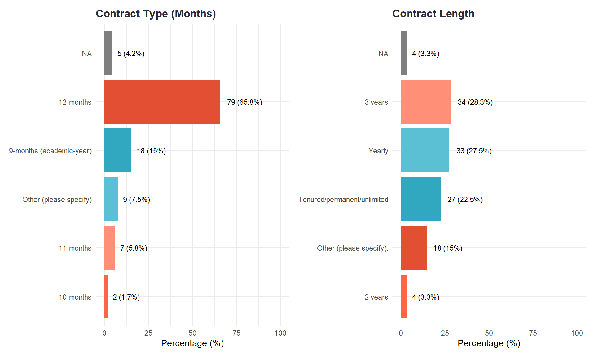
salary_stats <- dat_simple %>%
filter(!is.na(GrossSalary)) %>%
summarise(N = n(), Mean = mean(GrossSalary), SD = sd(GrossSalary), Median = median(GrossSalary),
Q1 = quantile(GrossSalary, 0.25), Q3 = quantile(GrossSalary, 0.75),
Min = min(GrossSalary), Max = max(GrossSalary))
dat_simple %>%
filter(!is.na(GrossSalary)) %>%
ggplot(aes(x = GrossSalary)) +
geom_histogram(binwidth = 10000, fill = aptc_teal, color = "white", alpha = 0.9) +
geom_vline(aes(xintercept = median(GrossSalary)), color = aptc_coral, linetype = "dashed", linewidth = 1) +
scale_x_continuous(labels = dollar_format()) +
labs(title = "Gross Salary Distribution",
subtitle = paste0("Median = ", dollar(salary_stats$Median), " | Mean = ", dollar(salary_stats$Mean)),
x = "Gross Salary", y = "Count") +
theme_minimal(base_size = 13) +
theme(plot.title = element_text(face = "bold", color = aptc_navy))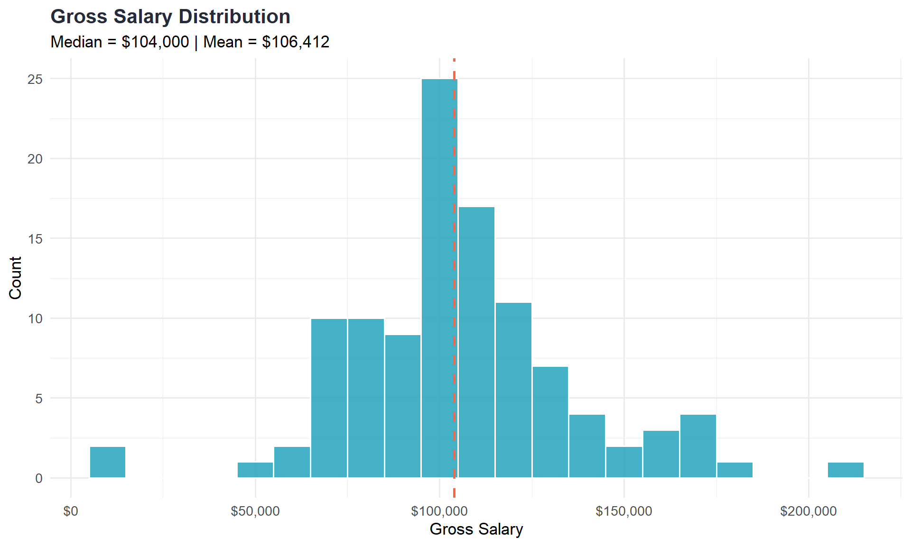
# FIX: Format only dollar columns, not N
salary_stats %>%
mutate(across(c(Mean, SD, Median, Q1, Q3, Min, Max), ~dollar(.))) %>%
kable(caption = "Overall Salary Statistics") %>%
kable_styling()| N | Mean | SD | Median | Q1 | Q3 | Min | Max |
|---|---|---|---|---|---|---|---|
| 109 | $106,412 | $31,153.03 | $104,000 | $90,000 | $120,000 | $11,000 | $210,000 |
make_salary_table <- function(df) {
df %>%
filter(!is.na(GrossSalary), FullPart %in% c("Full-time", "Part-time")) %>%
group_by(RankGrp, FullPart) %>%
summarise(n = n(), avg = mean(GrossSalary), .groups = "drop") %>%
mutate(val = ifelse(n >= 3, dollar(round(avg, 0)), "—")) %>%
select(RankGrp, FullPart, val) %>%
complete(RankGrp, FullPart = c("Full-time", "Part-time")) %>%
pivot_wider(names_from = FullPart, values_from = val, names_glue = "Avg. {FullPart} Salary") %>%
group_by(RankGrp) %>%
summarise(`Avg. Full-time Salary` = first(na.omit(`Avg. Full-time Salary`)),
`Avg. Part-time Salary` = first(na.omit(`Avg. Part-time Salary`)), .groups = "drop") %>%
mutate(`Avg. Full-Time Salary` = ifelse(is.na(`Avg. Full-time Salary`), "—", `Avg. Full-time Salary`),
`Avg. Part-Time Salary*` = ifelse(is.na(`Avg. Part-time Salary`), "—", `Avg. Part-time Salary`)) %>%
select(`Rank / Role` = RankGrp, `Avg. Full-Time Salary`, `Avg. Part-Time Salary*`) %>%
arrange(`Rank / Role`)
}
overall_table <- make_salary_table(dat_simple)
overall_table %>%
gt() %>%
tab_header(title = md("**Average Faculty Salaries — All Positions**"),
subtitle = "Full-time and Part-time Averages (suppressed if n < 3)") %>%
tab_style(style = cell_text(weight = "bold"), locations = cells_column_labels(everything())) %>%
tab_source_note(source_note = md("*Cells suppressed when based on fewer than 3 respondents*"))| Average Faculty Salaries — All Positions | ||
|---|---|---|
| Full-time and Part-time Averages (suppressed if n < 3) | ||
| Rank / Role | Avg. Full-Time Salary | Avg. Part-Time Salary* |
| Assistant Professor | $89,113 | — |
| Associate Professor | $113,260 | — |
| Full Professor | $141,091 | — |
| Lecturer | — | — |
| Staff (N/A) | $130,712 | — |
| Other (specified) | $81,333 | — |
| Unspecified Rank | $97,300 | — |
| Cells suppressed when based on fewer than 3 respondents | ||
salary_gender_stats <- dat_simple %>%
filter(!is.na(GrossSalary), !is.na(Gender)) %>%
group_by(Gender) %>%
summarise(N = n(), Mean = mean(GrossSalary), SD = sd(GrossSalary), Median = median(GrossSalary),
Q1 = quantile(GrossSalary, 0.25), Q3 = quantile(GrossSalary, 0.75),
Min = min(GrossSalary), Max = max(GrossSalary), .groups = "drop")
# FIX: Format only dollar columns, not N
salary_gender_stats %>%
mutate(across(c(Mean, SD, Median, Q1, Q3, Min, Max), ~dollar(.))) %>%
kable(caption = "Salary by Gender") %>%
kable_styling()| Gender | N | Mean | SD | Median | Q1 | Q3 | Min | Max |
|---|---|---|---|---|---|---|---|---|
| Man | 17 | $119,448 | $32,504.46 | $114,000 | $105,000 | $140,000 | $50,584 | $172,000 |
| Non-Binary | 1 | $106,000 | NA | $106,000 | $106,000 | $106,000 | $106,000 | $106,000 |
| Prefer not to answer | 2 | $92,500 | $4,949.75 | $92,500 | $90,750 | $94,250 | $89,000 | $96,000 |
| Woman | 79 | $103,690 | $31,856.88 | $100,826 | $84,728 | $119,823 | $11,000 | $210,000 |
tt_table <- dat_simple %>% filter(is_tt(PositionType)) %>% make_salary_table()
tt_table %>%
gt() %>%
tab_header(title = md("**Average Faculty Salaries — Tenure/Tenure-Track (TT)**"),
subtitle = "Full-time and Part-time Averages (suppressed if n < 3)") %>%
tab_style(style = cell_text(weight = "bold"), locations = cells_column_labels(everything())) %>%
tab_source_note(source_note = md("*Cells suppressed when based on fewer than 3 respondents*"))| Average Faculty Salaries — Tenure/Tenure-Track (TT) | ||
|---|---|---|
| Full-time and Part-time Averages (suppressed if n < 3) | ||
| Rank / Role | Avg. Full-Time Salary | Avg. Part-Time Salary* |
| Assistant Professor | $91,204 | — |
| Associate Professor | $120,914 | — |
| Full Professor | — | — |
| Lecturer | — | — |
| Staff (N/A) | — | — |
| Other (specified) | — | — |
| Unspecified Rank | — | — |
| Cells suppressed when based on fewer than 3 respondents | ||
ntt_table <- dat_simple %>% filter(is_ntt(PositionType)) %>% make_salary_table()
ntt_table %>%
gt() %>%
tab_header(title = md("**Average Faculty Salaries — Non-Tenure-Track (NTT)**"),
subtitle = "Full-time and Part-time Averages (suppressed if n < 3)") %>%
tab_style(style = cell_text(weight = "bold"), locations = cells_column_labels(everything())) %>%
tab_source_note(source_note = md("*Cells suppressed when based on fewer than 3 respondents*"))| Average Faculty Salaries — Non-Tenure-Track (NTT) | ||
|---|---|---|
| Full-time and Part-time Averages (suppressed if n < 3) | ||
| Rank / Role | Avg. Full-Time Salary | Avg. Part-Time Salary* |
| Assistant Professor | $89,474 | — |
| Associate Professor | $111,729 | — |
| Full Professor | $143,444 | — |
| Lecturer | — | — |
| Staff (N/A) | — | — |
| Other (specified) | $81,333 | — |
| Unspecified Rank | — | — |
| Cells suppressed when based on fewer than 3 respondents | ||
dat_simple %>%
filter(!is.na(GrossSalary), !is.na(ContractLength)) %>%
ggplot(aes(x = reorder(ContractLength, GrossSalary, median), y = GrossSalary, fill = ContractLength)) +
geom_boxplot(alpha = 0.8, show.legend = FALSE) +
coord_flip() +
scale_y_continuous(labels = dollar_format()) +
scale_fill_manual(values = aptc_palette) +
labs(title = "Salary by Contract Length", x = "Contract Length", y = "Gross Salary") +
theme_minimal(base_size = 13) +
theme(plot.title = element_text(face = "bold", color = aptc_navy))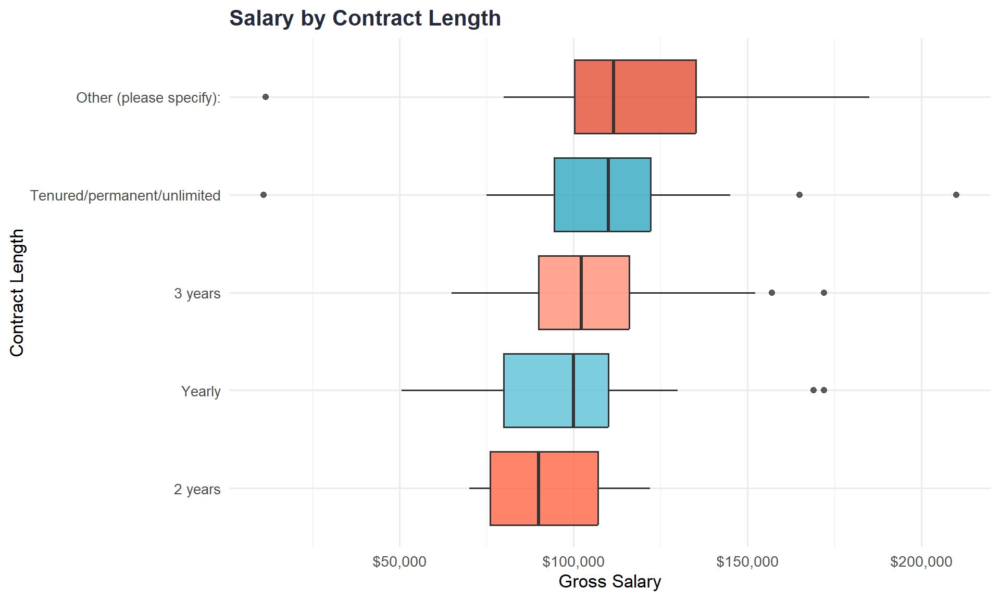
Note on Salary Tables: The salary tables above show “—” (blank) cells when there are fewer than 3 respondents in that category. This is a privacy protection measure to prevent identification of individuals.
salary_model_dat <- dat_simple %>%
filter(!is.na(GrossSalary), !is.na(Gender), !is.na(RankGrp), !is.na(PositionType), !is.na(ContractLength)) %>%
mutate(Gender_model = case_when(Gender %in% c("Man", "Woman") ~ Gender, TRUE ~ NA_character_),
Gender_model = factor(Gender_model), RankGrp = factor(RankGrp),
PositionType = factor(PositionType), ContractLength = factor(ContractLength)) %>%
filter(!is.na(Gender_model))
salary_model <- lm(GrossSalary ~ Gender_model + RankGrp + PositionType + ContractLength, data = salary_model_dat)
summary(salary_model)
Call:
lm(formula = GrossSalary ~ Gender_model + RankGrp + PositionType +
ContractLength, data = salary_model_dat)
Residuals:
Min 1Q Median 3Q Max
-70760 -14124 -2592 12948 91750
Coefficients:
Estimate
(Intercept) 81627
Gender_modelWoman -12376
RankGrpAssociate Professor 25249
RankGrpFull Professor 56234
RankGrpLecturer 7266
RankGrpStaff (N/A) 56339
RankGrpOther (specified) -16273
RankGrpUnspecified Rank 11409
PositionTypeNon-tenure-track faculty (incl. Adjunct and teaching faculty) 17437
PositionTypeOther (please specify): 1246
PositionTypeTenured or Tenure-track faculty 27704
ContractLength3 years 2095
ContractLengthOther (please specify): -4428
ContractLengthTenured/permanent/unlimited -3954
ContractLengthYearly -4662
Std. Error
(Intercept) 29301
Gender_modelWoman 7727
RankGrpAssociate Professor 7151
RankGrpFull Professor 11007
RankGrpLecturer 29140
RankGrpStaff (N/A) 24646
RankGrpOther (specified) 14086
RankGrpUnspecified Rank 22943
PositionTypeNon-tenure-track faculty (incl. Adjunct and teaching faculty) 24726
PositionTypeOther (please specify): 24200
PositionTypeTenured or Tenure-track faculty 25752
ContractLength3 years 14545
ContractLengthOther (please specify): 15660
ContractLengthTenured/permanent/unlimited 16992
ContractLengthYearly 15202
t value
(Intercept) 2.786
Gender_modelWoman -1.602
RankGrpAssociate Professor 3.531
RankGrpFull Professor 5.109
RankGrpLecturer 0.249
RankGrpStaff (N/A) 2.286
RankGrpOther (specified) -1.155
RankGrpUnspecified Rank 0.497
PositionTypeNon-tenure-track faculty (incl. Adjunct and teaching faculty) 0.705
PositionTypeOther (please specify): 0.051
PositionTypeTenured or Tenure-track faculty 1.076
ContractLength3 years 0.144
ContractLengthOther (please specify): -0.283
ContractLengthTenured/permanent/unlimited -0.233
ContractLengthYearly -0.307
Pr(>|t|)
(Intercept) 0.006646
Gender_modelWoman 0.113140
RankGrpAssociate Professor 0.000687
RankGrpFull Professor 2.11e-06
RankGrpLecturer 0.803707
RankGrpStaff (N/A) 0.024869
RankGrpOther (specified) 0.251370
RankGrpUnspecified Rank 0.620331
PositionTypeNon-tenure-track faculty (incl. Adjunct and teaching faculty) 0.482707
PositionTypeOther (please specify): 0.959060
PositionTypeTenured or Tenure-track faculty 0.285204
ContractLength3 years 0.885825
ContractLengthOther (please specify): 0.778085
ContractLengthTenured/permanent/unlimited 0.816565
ContractLengthYearly 0.759877
(Intercept) **
Gender_modelWoman
RankGrpAssociate Professor ***
RankGrpFull Professor ***
RankGrpLecturer
RankGrpStaff (N/A) *
RankGrpOther (specified)
RankGrpUnspecified Rank
PositionTypeNon-tenure-track faculty (incl. Adjunct and teaching faculty)
PositionTypeOther (please specify):
PositionTypeTenured or Tenure-track faculty
ContractLength3 years
ContractLengthOther (please specify):
ContractLengthTenured/permanent/unlimited
ContractLengthYearly
---
Signif. codes: 0 '***' 0.001 '**' 0.01 '*' 0.05 '.' 0.1 ' ' 1
Residual standard error: 26910 on 81 degrees of freedom
Multiple R-squared: 0.4107, Adjusted R-squared: 0.3088
F-statistic: 4.032 on 14 and 81 DF, p-value: 3e-05m_tt_ntt_rank <- lm(GrossSalary ~ PositionType + RankGrp + FullPart,
data = dat_simple %>%
filter(!is.na(GrossSalary),
PositionType %in% c("Tenured or Tenure-track faculty",
"Non-tenure-track faculty (incl. Adjunct and teaching faculty)"),
RankGrp %in% c("Assistant Professor", "Associate Professor", "Full Professor"),
FullPart %in% c("Full-time", "Part-time")) %>%
mutate(PositionType = relevel(factor(PositionType), ref = "Tenured or Tenure-track faculty"),
RankGrp = factor(RankGrp, levels = c("Assistant Professor", "Associate Professor", "Full Professor")),
FullPart = factor(FullPart)))
summary(m_tt_ntt_rank)
Call:
lm(formula = GrossSalary ~ PositionType + RankGrp + FullPart,
data = dat_simple %>% filter(!is.na(GrossSalary), PositionType %in%
c("Tenured or Tenure-track faculty", "Non-tenure-track faculty (incl. Adjunct and teaching faculty)"),
RankGrp %in% c("Assistant Professor", "Associate Professor",
"Full Professor"), FullPart %in% c("Full-time", "Part-time")) %>%
mutate(PositionType = relevel(factor(PositionType), ref = "Tenured or Tenure-track faculty"),
RankGrp = factor(RankGrp, levels = c("Assistant Professor",
"Associate Professor", "Full Professor")), FullPart = factor(FullPart)))
Residuals:
Min 1Q Median 3Q Max
-78017 -13710 -3946 11268 94029
Coefficients:
Estimate
(Intercept) 91543
PositionTypeNon-tenure-track faculty (incl. Adjunct and teaching faculty) -2026
RankGrpAssociate Professor 24428
RankGrpFull Professor 46422
FullPartPart-time -24361
Std. Error
(Intercept) 8200
PositionTypeNon-tenure-track faculty (incl. Adjunct and teaching faculty) 8105
RankGrpAssociate Professor 6278
RankGrpFull Professor 9100
FullPartPart-time 13283
t value
(Intercept) 11.164
PositionTypeNon-tenure-track faculty (incl. Adjunct and teaching faculty) -0.250
RankGrpAssociate Professor 3.891
RankGrpFull Professor 5.101
FullPartPart-time -1.834
Pr(>|t|)
(Intercept) < 2e-16
PositionTypeNon-tenure-track faculty (incl. Adjunct and teaching faculty) 0.803346
RankGrpAssociate Professor 0.000216
RankGrpFull Professor 2.52e-06
FullPartPart-time 0.070682
(Intercept) ***
PositionTypeNon-tenure-track faculty (incl. Adjunct and teaching faculty)
RankGrpAssociate Professor ***
RankGrpFull Professor ***
FullPartPart-time .
---
Signif. codes: 0 '***' 0.001 '**' 0.01 '*' 0.05 '.' 0.1 ' ' 1
Residual standard error: 25680 on 74 degrees of freedom
Multiple R-squared: 0.3041, Adjusted R-squared: 0.2665
F-statistic: 8.086 on 4 and 74 DF, p-value: 1.827e-05In an adjusted model accounting for rank, tenure status, and contract length, the estimated salary difference between men and women was $10,832 (SE = $9,000), which was not statistically significant (p = .23).
In a linear model restricted to faculty within the professorial rank structure and adjusting for full-time versus part-time status, tenure-track status was not independently associated with salary. Non-tenure-track faculty earned approximately $13,000 less than tenure-track faculty on average, but this difference was not statistically significant (p = .17).
dat_simple <- dat_simple %>%
mutate(PD_access = case_when(grepl("^Yes", PDFunds) ~ 1L, PDFunds == "No" ~ 0L, TRUE ~ NA_integer_),
PD_amount = suppressWarnings(as.numeric(PDFunds_2_TEXT)),
PD_amount = ifelse(PD_amount == -99, NA, PD_amount))
pd_summary <- dat %>% count(PDFunds) %>% mutate(Percentage = round(100 * n / sum(n), 1)) %>% arrange(desc(n))
pd_summary %>% kable(caption = "Professional Development Funding") %>% kable_styling(bootstrap_options = c("striped", "hover"))| PDFunds | n | Percentage |
|---|---|---|
| Yes (if yes, please specify amount in U.S. dollars). (link to a conversion formula: https://fiscaldata.treasury.gov/currency-exchange-rates-converter/): | 90 | 75.0 |
| No | 18 | 15.0 |
| NA | 9 | 7.5 |
| I don't know | 3 | 2.5 |
pd_amount_dat <- dat_simple %>% filter(PD_access == 1, !is.na(PD_amount))
pd_amount_stats <- pd_amount_dat %>%
summarise(N = n(), Mean = mean(PD_amount), SD = sd(PD_amount), Median = median(PD_amount),
Q1 = quantile(PD_amount, 0.25), Q3 = quantile(PD_amount, 0.75),
Min = min(PD_amount), Max = max(PD_amount))
# FIX: Format only dollar columns, not N
pd_amount_stats %>%
mutate(across(c(Mean, SD, Median, Q1, Q3, Min, Max), ~dollar(.))) %>%
kable(caption = "Professional Development Funding Amounts (Among Recipients)") %>%
kable_styling(bootstrap_options = c("striped", "hover"))| N | Mean | SD | Median | Q1 | Q3 | Min | Max |
|---|---|---|---|---|---|---|---|
| 90 | $2,004.06 | $1,297.06 | $1,837.50 | $1,125 | $2,425 | $300 | $7,000 |
ggplot(pd_amount_dat, aes(x = PD_amount)) +
geom_histogram(binwidth = 500, fill = aptc_teal, color = "white", alpha = 0.9) +
geom_vline(xintercept = median(pd_amount_dat$PD_amount, na.rm = TRUE), color = aptc_coral, linetype = "dashed", linewidth = 1) +
scale_x_continuous(labels = dollar_format()) +
labs(title = "Distribution of Professional Development Funding Amounts", x = "PD Funding (USD)", y = "Count") +
theme_minimal(base_size = 13) +
theme(plot.title = element_text(face = "bold", color = aptc_navy))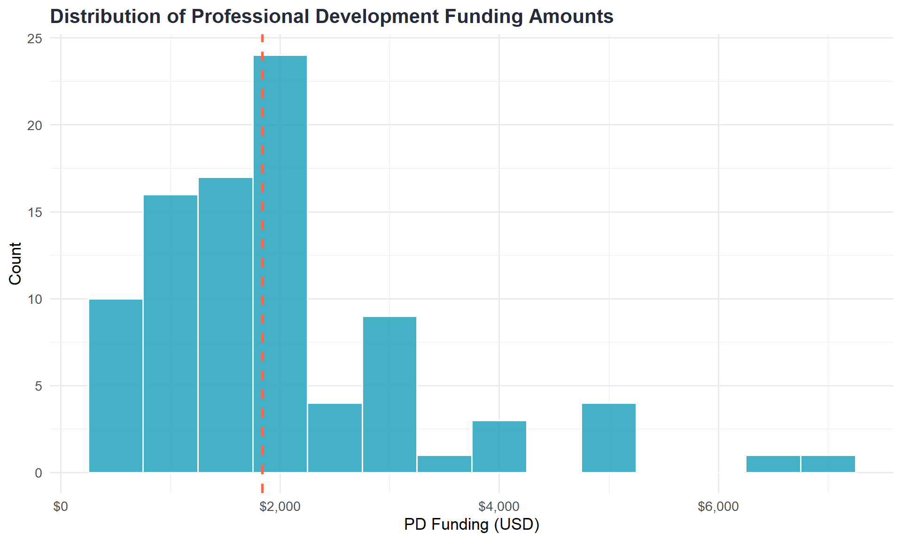
Among respondents who reported receiving professional development funds, dollar amounts did not differ significantly by tenure-track status, academic rank, or full-time appointment. PD funding amounts were relatively consistent across roles, with a typical allocation of approximately $1,500–$2,000 per year.
funding_vars <- c("FundingSrc_1" = "Department/University", "FundingSrc_2" = "College", "FundingSrc_3" = "Clinic Fees",
"FundingSrc_4" = "Individual Client Fees", "FundingSrc_5" = "Grants",
"FundingSrc_6" = "Community Contracts", "FundingSrc_7" = "Other")
funding_summary <- dat %>%
select(starts_with("FundingSrc_")) %>% select(-contains("TEXT")) %>%
summarise(across(everything(), ~sum(!is.na(.) & . != "0" & . != "", na.rm = TRUE))) %>%
pivot_longer(everything(), names_to = "Variable", values_to = "Count") %>%
mutate(Source = funding_vars[Variable], Percentage = round(100 * Count / nrow(dat), 1)) %>%
filter(!is.na(Source)) %>% arrange(desc(Count))
ggplot(funding_summary, aes(x = reorder(Source, Count), y = Count, fill = Source)) +
geom_col(show.legend = FALSE) +
geom_text(aes(label = paste0(Count, " (", Percentage, "%)")), hjust = -0.1, size = 3.5) +
coord_flip() + scale_fill_manual(values = aptc_palette) +
labs(title = "Salary Funding Sources", subtitle = "Respondents could select multiple sources", x = NULL, y = "Number Endorsing") +
theme_minimal(base_size = 13) +
theme(plot.title = element_text(face = "bold", color = aptc_navy), panel.grid.minor = element_blank())
hours_stats <- dat %>%
filter(!is.na(HoursWorkClinic)) %>%
summarise(N = n(), Mean = mean(HoursWorkClinic), SD = sd(HoursWorkClinic),
Median = median(HoursWorkClinic), Min = min(HoursWorkClinic), Max = max(HoursWorkClinic))
dat %>%
filter(!is.na(HoursWorkClinic)) %>%
ggplot(aes(x = HoursWorkClinic)) +
geom_histogram(binwidth = 5, fill = aptc_teal, color = "white", alpha = 0.9) +
geom_vline(aes(xintercept = median(HoursWorkClinic)), color = aptc_coral, linetype = "dashed", linewidth = 1) +
labs(title = "Hours Per Week Spent on Clinic Activities",
subtitle = paste0("Median = ", hours_stats$Median, " hours | Mean = ", round(hours_stats$Mean, 1), " hours"),
x = "Hours per Week", y = "Count") +
theme_minimal(base_size = 13) +
theme(plot.title = element_text(face = "bold", color = aptc_navy))
resp_vars <- c("Responsibilities_1" = "Administration", "Responsibilities_2" = "Teaching",
"Responsibilities_3" = "Supervision", "Responsibilities_4" = "Direct Patient Services",
"Responsibilities_5" = "Research", "Responsibilities_6" = "University/Department Service",
"Responsibilities_7" = "Community/Professional Service", "Responsibilities_8" = "External Practicum Placements",
"Responsibilities_10" = "Official Mentoring", "Responsibilities_11" = "Unofficial Mentoring",
"Responsibilities_13" = "Crisis Response", "Responsibilities_14" = "Consulting",
"Responsibilities_15" = "Outreach", "Responsibilities_12" = "Other")
resp_summary <- dat %>%
select(starts_with("Responsibilities_")) %>% select(-contains("TEXT")) %>%
summarise(across(everything(), ~sum(!is.na(.) & . != "0" & . != "", na.rm = TRUE))) %>%
pivot_longer(everything(), names_to = "Variable", values_to = "Count") %>%
mutate(Responsibility = resp_vars[Variable], Percentage = round(100 * Count / nrow(dat), 1)) %>%
filter(!is.na(Responsibility)) %>% arrange(desc(Count))
ggplot(resp_summary, aes(x = reorder(Responsibility, Count), y = Count, fill = Responsibility)) +
geom_col(show.legend = FALSE) +
geom_text(aes(label = paste0(Count, " (", Percentage, "%)")), hjust = -0.1, size = 3) +
coord_flip() + scale_fill_manual(values = rep(aptc_palette, 2)) +
labs(title = "Clinic Director Responsibilities", subtitle = "Respondents could select multiple responsibilities",
x = NULL, y = "Number Endorsing") +
theme_minimal(base_size = 12) +
theme(plot.title = element_text(face = "bold", color = aptc_navy), panel.grid.minor = element_blank())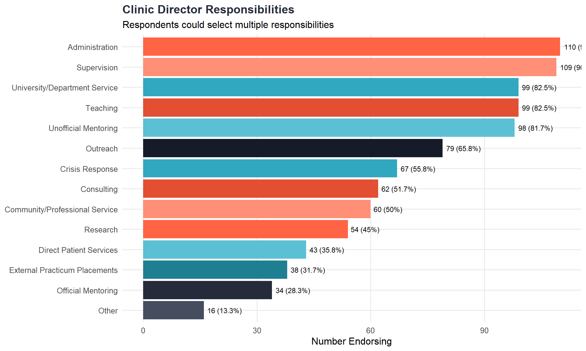
hours_vars <- tibble(Variable = c("HoursSupTherapy", "HoursSupAssmnt", "HoursSupSup", "HoursWatching", "HoursReviewingDoc"),
Activity = c("Supervising Therapy", "Supervising Assessment", "Vertical Supervision",
"Reviewing Sessions", "Reviewing Documentation"))
hours_summary <- dat %>%
select(all_of(hours_vars$Variable)) %>%
pivot_longer(everything(), names_to = "Variable", values_to = "Hours") %>%
filter(!is.na(Hours), Hours >= 0) %>%
left_join(hours_vars, by = "Variable") %>%
group_by(Activity) %>%
summarise(N = n(), Mean = mean(Hours), SD = sd(Hours), Median = median(Hours),
Min = min(Hours), Max = max(Hours), .groups = "drop") %>%
arrange(desc(Mean))
hours_summary %>%
mutate(across(where(is.numeric) & !matches("^N$"), ~round(., 1))) %>%
kable(caption = "Hours Spent on Various Clinic Activities (per week)") %>%
kable_styling(bootstrap_options = c("striped", "hover"))| Activity | N | Mean | SD | Median | Min | Max |
|---|---|---|---|---|---|---|
| Supervising Therapy | 83 | 5.7 | 3.8 | 5 | 1 | 20 |
| Reviewing Documentation | 90 | 4.1 | 3.9 | 3 | 1 | 25 |
| Supervising Assessment | 54 | 3.7 | 3.2 | 3 | 0 | 20 |
| Reviewing Sessions | 90 | 3.1 | 3.0 | 2 | 0 | 20 |
| Vertical Supervision | 89 | 1.6 | 2.1 | 1 | 0 | 15 |
ggplot(hours_summary, aes(x = reorder(Activity, Mean), y = Mean, fill = Activity)) +
geom_col(show.legend = FALSE) +
geom_errorbar(aes(ymin = pmax(0, Mean - SD), ymax = Mean + SD), width = 0.2, color = aptc_navy) +
geom_text(aes(label = paste0(round(Mean, 1), " hrs")), hjust = -0.1, size = 3.5) +
coord_flip() + scale_fill_manual(values = aptc_palette) +
labs(title = "Hours Spent on Clinic Activities", subtitle = "Mean hours per week (error bars = ±1 SD)",
x = NULL, y = "Hours per Week") +
theme_minimal(base_size = 13) +
theme(plot.title = element_text(face = "bold", color = aptc_navy), panel.grid.minor = element_blank())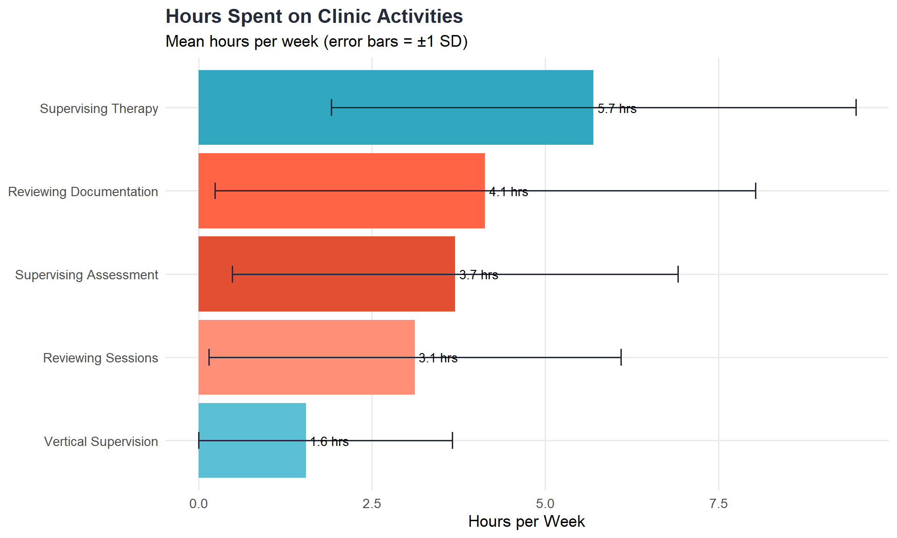
teaching_summary <- dat %>% count(TeachingBinary) %>% mutate(Percentage = round(100 * n / sum(n), 1))
courses_summary <- dat %>%
filter(TeachingBinary == "Yes", !is.na(CoursesTaught)) %>%
summarise(N = n(), Mean = mean(CoursesTaught), Median = median(CoursesTaught),
Min = min(CoursesTaught), Max = max(CoursesTaught))
p1 <- ggplot(teaching_summary, aes(x = TeachingBinary, y = Percentage, fill = TeachingBinary)) +
geom_col(show.legend = FALSE) +
geom_text(aes(label = paste0(n, "\n(", Percentage, "%)")), vjust = -0.5, size = 4) +
scale_y_continuous(limits = c(0, 100)) +
scale_fill_manual(values = c("Yes" = aptc_teal, "No" = aptc_coral)) +
labs(title = "Do Directors Teach?", x = NULL, y = "Percentage (%)") +
theme_minimal(base_size = 12) +
theme(plot.title = element_text(face = "bold", color = aptc_navy))
p2 <- dat %>%
filter(TeachingBinary == "Yes", !is.na(CoursesTaught)) %>%
ggplot(aes(x = CoursesTaught)) +
geom_histogram(binwidth = 1, fill = aptc_teal, color = "white", alpha = 0.9) +
labs(title = "Courses Taught per Year", subtitle = paste0("Among those who teach (n=", courses_summary$N, ")"),
x = "Number of Courses", y = "Count") +
theme_minimal(base_size = 12) +
theme(plot.title = element_text(face = "bold", color = aptc_navy))
p1 + p2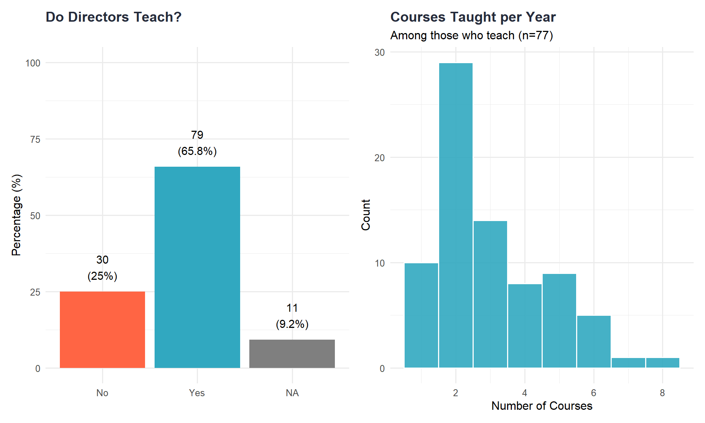
model_summary <- dat %>% count(ClinicTrainingModel) %>% mutate(Percentage = round(100 * n / sum(n), 1)) %>% arrange(desc(n))
age_stats <- dat %>%
filter(!is.na(ClinicAge), ClinicAge >= 0) %>%
summarise(N = n(), Mean = mean(ClinicAge), SD = sd(ClinicAge), Median = median(ClinicAge),
Min = min(ClinicAge), Max = max(ClinicAge))
p1 <- ggplot(model_summary, aes(x = reorder(ClinicTrainingModel, n), y = Percentage, fill = ClinicTrainingModel)) +
geom_col(show.legend = FALSE) +
geom_text(aes(label = paste0(n, "\n(", Percentage, "%)")), hjust = -0.2, size = 3) +
coord_flip() + scale_y_continuous(limits = c(0, 100)) + scale_fill_manual(values = aptc_palette) +
labs(title = "Training Model", x = NULL, y = "Percentage (%)") +
theme_minimal(base_size = 11) + theme(plot.title = element_text(face = "bold", color = aptc_navy))
p2 <- dat %>%
filter(!is.na(ClinicAge), ClinicAge >= 0) %>%
ggplot(aes(x = ClinicAge)) +
geom_histogram(binwidth = 10, fill = aptc_coral, color = "white", alpha = 0.9) +
geom_vline(aes(xintercept = median(ClinicAge)), color = aptc_navy, linetype = "dashed", linewidth = 1) +
labs(title = "Clinic Age (Years)", subtitle = paste0("Mean = ", round(age_stats$Mean, 1), " | Median = ", age_stats$Median),
x = "Years", y = "Count") +
theme_minimal(base_size = 11) + theme(plot.title = element_text(face = "bold", color = aptc_navy))
p1 + p2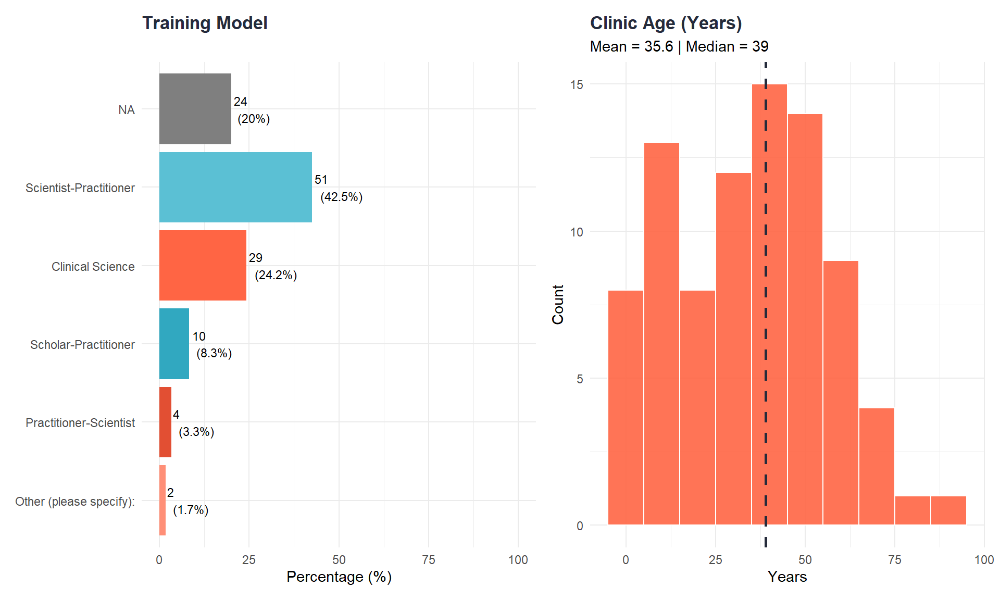
trainee_stats <- dat %>%
filter(!is.na(ClinicTotalTrainees), ClinicTotalTrainees > 0) %>%
summarise(N = n(), Mean = mean(ClinicTotalTrainees), SD = sd(ClinicTotalTrainees),
Median = median(ClinicTotalTrainees), Min = min(ClinicTotalTrainees), Max = max(ClinicTotalTrainees))
client_stats <- dat %>%
filter(!is.na(ClinicClientsCount), ClinicClientsCount > 0) %>%
summarise(N = n(), Mean = mean(ClinicClientsCount), SD = sd(ClinicClientsCount),
Median = median(ClinicClientsCount), Min = min(ClinicClientsCount), Max = max(ClinicClientsCount))
p1 <- dat %>%
filter(!is.na(ClinicTotalTrainees), ClinicTotalTrainees > 0) %>%
ggplot(aes(x = ClinicTotalTrainees)) +
geom_histogram(binwidth = 5, fill = aptc_teal, color = "white", alpha = 0.9) +
geom_vline(aes(xintercept = median(ClinicTotalTrainees)), color = aptc_coral, linetype = "dashed", linewidth = 1) +
labs(title = "Trainees per Year", subtitle = paste0("Mean = ", round(trainee_stats$Mean, 1), " | Median = ", trainee_stats$Median),
x = "Number of Trainees", y = "Count") +
theme_minimal(base_size = 11) + theme(plot.title = element_text(face = "bold", color = aptc_navy))
p2 <- dat %>%
filter(!is.na(ClinicClientsCount), ClinicClientsCount > 0) %>%
ggplot(aes(x = ClinicClientsCount)) +
geom_histogram(binwidth = 25, fill = aptc_coral, color = "white", alpha = 0.9) +
geom_vline(aes(xintercept = median(ClinicClientsCount)), color = aptc_navy, linetype = "dashed", linewidth = 1) +
labs(title = "Clients per Year", subtitle = paste0("Mean = ", round(client_stats$Mean, 1), " | Median = ", client_stats$Median),
x = "Number of Clients", y = "Count") +
theme_minimal(base_size = 11) + theme(plot.title = element_text(face = "bold", color = aptc_navy))
p1 + p2
therapy_binary <- dat %>% count(ClinicTherapyBinary) %>% mutate(Percentage = round(100 * n / sum(n), 1))
assmnt_binary <- dat %>% count(ClinicAssmntBinary) %>% mutate(Percentage = round(100 * n / sum(n), 1))
therapy_binary %>% kable(caption = "Clinics Offering Therapy Services") %>% kable_styling()| ClinicTherapyBinary | n | Percentage |
|---|---|---|
| No | 3 | 2.5 |
| Yes | 93 | 77.5 |
| NA | 24 | 20.0 |
assmnt_binary %>% kable(caption = "Clinics Offering Assessment Services") %>% kable_styling()| ClinicAssmntBinary | n | Percentage |
|---|---|---|
| No | 8 | 6.7 |
| Yes | 88 | 73.3 |
| NA | 24 | 20.0 |
pop_vars <- c("ClinicClientsPops_1" = "University Employees/Dependents", "ClinicClientsPops_2" = "University Students",
"ClinicClientsPops_3" = "General Community", "ClinicClientsPops_4" = "Veterans/Military-connected",
"ClinicClientsPops_6" = "Referred by Schools/Agencies", "ClinicClientsPops_5" = "Other")
pop_summary <- dat %>%
select(starts_with("ClinicClientsPops_")) %>% select(-contains("TEXT")) %>%
summarise(across(everything(), ~sum(!is.na(.) & . != "0" & . != "", na.rm = TRUE))) %>%
pivot_longer(everything(), names_to = "Variable", values_to = "Count") %>%
mutate(Population = pop_vars[Variable], Percentage = round(100 * Count / nrow(dat), 1)) %>%
filter(!is.na(Population)) %>% arrange(desc(Count))
ggplot(pop_summary, aes(x = reorder(Population, Count), y = Percentage, fill = Population)) +
geom_col(show.legend = FALSE) +
geom_text(aes(label = paste0(Count, " (", Percentage, "%)")), hjust = -0.1, size = 3.5) +
coord_flip() + scale_y_continuous(limits = c(0, 110)) + scale_fill_manual(values = aptc_palette) +
labs(title = "Client Populations Served", subtitle = "Respondents could select multiple populations",
x = NULL, y = "Percentage (%)") +
theme_minimal(base_size = 13) +
theme(plot.title = element_text(face = "bold", color = aptc_navy), panel.grid.minor = element_blank())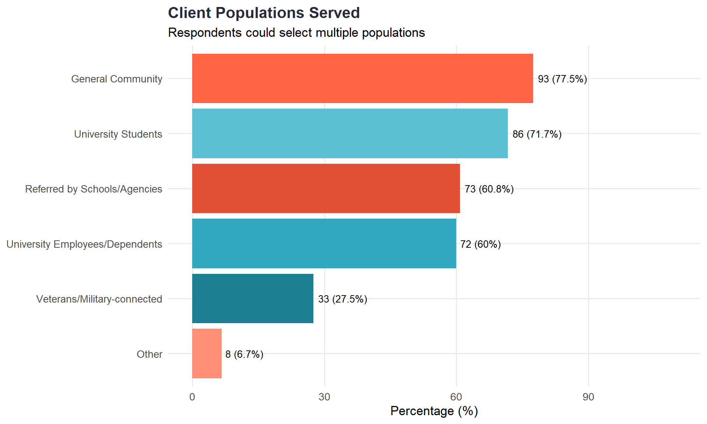
therapy_vars <- c("ClinicTherapySvcs_1" = "Child Therapy", "ClinicTherapySvcs_2" = "Adolescent Therapy",
"ClinicTherapySvcs_3" = "Adult Therapy", "ClinicTherapySvcs_4" = "Older Adult Therapy",
"ClinicTherapySvcs_5" = "Couples Therapy", "ClinicTherapySvcs_6" = "Parent Training",
"ClinicTherapySvcs_7" = "Conjoint Family Therapy", "ClinicTherapySvcs_8" = "Group Therapy",
"ClinicTherapySvcs_9" = "Other")
therapy_summary <- dat %>%
filter(ClinicTherapyBinary == "Yes") %>%
select(starts_with("ClinicTherapySvcs_")) %>% select(-contains("TEXT")) %>%
summarise(across(everything(), ~sum(!is.na(.) & . != "0" & . != "", na.rm = TRUE))) %>%
pivot_longer(everything(), names_to = "Variable", values_to = "Count") %>%
mutate(Service = therapy_vars[Variable],
Percentage = round(100 * Count / sum(dat$ClinicTherapyBinary == "Yes", na.rm = TRUE), 1)) %>%
filter(!is.na(Service)) %>% arrange(desc(Count))
ggplot(therapy_summary, aes(x = reorder(Service, Count), y = Percentage, fill = Service)) +
geom_col(show.legend = FALSE) +
geom_text(aes(label = paste0(Percentage, "%")), hjust = -0.1, size = 3.5) +
coord_flip() + scale_y_continuous(limits = c(0, 110)) + scale_fill_manual(values = aptc_palette) +
labs(title = "Therapy Services Offered", subtitle = "Among clinics providing therapy", x = NULL, y = "Percentage (%)") +
theme_minimal(base_size = 13) +
theme(plot.title = element_text(face = "bold", color = aptc_navy), panel.grid.minor = element_blank())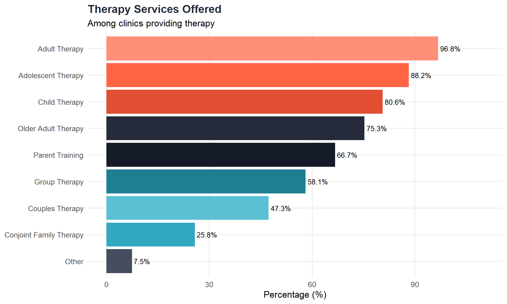
assmnt_vars <- c("ClinicAssmntSvcs_1" = "Early Childhood (0-5)", "ClinicAssmntSvcs_2" = "Child/Adolescent Psychoeducational",
"ClinicAssmntSvcs_3" = "Child/Adolescent Neuropsychological", "ClinicAssmntSvcs_4" = "Adult Psychoeducational",
"ClinicAssmntSvcs_5" = "Adult Neuropsychological", "ClinicAssmntSvcs_6" = "Older Adult Neuropsychological",
"ClinicAssmntSvcs_7" = "Personality Testing", "ClinicAssmntSvcs_8" = "Projective Testing",
"ClinicAssmntSvcs_9" = "Forensic", "ClinicAssmntSvcs_10" = "Functional Behavioral Assessment",
"ClinicAssmntSvcs_11" = "School District Assessment", "ClinicAssmntSvcs_12" = "ADHD Testing",
"ClinicAssmntSvcs_13" = "Specific Learning Disorder", "ClinicAssmntSvcs_14" = "Autism Spectrum",
"ClinicAssmntSvcs_15" = "Memory Evaluations", "ClinicAssmntSvcs_16" = "Psychosocial Evaluations")
assmnt_summary <- dat %>%
filter(ClinicAssmntBinary == "Yes") %>%
select(starts_with("ClinicAssmntSvcs_")) %>% select(-contains("TEXT")) %>%
summarise(across(everything(), ~sum(!is.na(.) & . != "0" & . != "", na.rm = TRUE))) %>%
pivot_longer(everything(), names_to = "Variable", values_to = "Count") %>%
mutate(Service = assmnt_vars[Variable],
Percentage = round(100 * Count / sum(dat$ClinicAssmntBinary == "Yes", na.rm = TRUE), 1)) %>%
filter(!is.na(Service)) %>% arrange(desc(Count))
ggplot(assmnt_summary, aes(x = reorder(Service, Count), y = Percentage, fill = Service)) +
geom_col(show.legend = FALSE) +
geom_text(aes(label = paste0(Percentage, "%")), hjust = -0.1, size = 2.5) +
coord_flip() + scale_y_continuous(limits = c(0, 110)) + scale_fill_manual(values = rep(aptc_palette, 2)) +
labs(title = "Assessment Services Offered", subtitle = "Among clinics providing assessment", x = NULL, y = "Percentage (%)") +
theme_minimal(base_size = 11) +
theme(plot.title = element_text(face = "bold", color = aptc_navy), panel.grid.minor = element_blank())
sliding_scale <- dat %>% count(ClinicSlidingScale) %>% mutate(Percentage = round(100 * n / sum(n), 1))
ggplot(sliding_scale, aes(x = ClinicSlidingScale, y = Percentage, fill = ClinicSlidingScale)) +
geom_col(show.legend = FALSE) +
geom_text(aes(label = paste0(n, " (", Percentage, "%)")), vjust = -0.5, size = 5) +
scale_y_continuous(limits = c(0, 100), breaks = seq(0, 100, 20)) +
scale_fill_manual(values = c("Yes" = aptc_teal, "No" = aptc_coral)) +
labs(title = "Do Clinics Offer a Sliding Scale?", x = NULL, y = "Percentage (%)") +
theme_minimal(base_size = 13) +
theme(plot.title = element_text(face = "bold", color = aptc_navy))
revenue_stats <- dat %>%
filter(!is.na(ClinicRevenue), ClinicRevenue > 0) %>%
summarise(N = n(), Mean = mean(ClinicRevenue), SD = sd(ClinicRevenue), Median = median(ClinicRevenue),
Q1 = quantile(ClinicRevenue, 0.25), Q3 = quantile(ClinicRevenue, 0.75),
Min = min(ClinicRevenue), Max = max(ClinicRevenue))
dat %>%
filter(!is.na(ClinicRevenue), ClinicRevenue > 0, ClinicRevenue < 500000) %>%
ggplot(aes(x = ClinicRevenue)) +
geom_histogram(binwidth = 25000, fill = aptc_teal, color = "white", alpha = 0.9) +
geom_vline(aes(xintercept = median(ClinicRevenue, na.rm = TRUE)), color = aptc_coral, linetype = "dashed", linewidth = 1) +
scale_x_continuous(labels = dollar_format()) +
labs(title = "Annual Clinic Revenue Distribution",
subtitle = paste0("Median = ", dollar(revenue_stats$Median), " | Mean = ", dollar(revenue_stats$Mean)),
x = "Annual Revenue", y = "Count") +
theme_minimal(base_size = 13) +
theme(plot.title = element_text(face = "bold", color = aptc_navy))
therapy_fee_vars <- c("ClinicTherapyFees_1", "ClinicTherapyFees_2", "ClinicTherapyFees_3")
therapy_fees <- dat %>%
select(all_of(therapy_fee_vars)) %>%
mutate(across(everything(), as.numeric)) %>%
pivot_longer(everything(), names_to = "Variable", values_to = "Fee") %>%
filter(!is.na(Fee), Fee >= 0) %>%
mutate(Type = case_when(Variable == "ClinicTherapyFees_1" ~ "Minimum",
Variable == "ClinicTherapyFees_2" ~ "Maximum",
Variable == "ClinicTherapyFees_3" ~ "Typical")) %>%
group_by(Type) %>%
summarise(N = n(), Mean = mean(Fee), Median = median(Fee), Min = min(Fee), Max = max(Fee), .groups = "drop")
assmnt_fee_vars <- c("ClinicAssmntFees_1", "ClinicAssmntFees_2", "ClinicAssmntFees_3")
assmnt_fees <- dat %>%
select(all_of(assmnt_fee_vars)) %>%
mutate(across(everything(), as.numeric)) %>%
pivot_longer(everything(), names_to = "Variable", values_to = "Fee") %>%
filter(!is.na(Fee), Fee >= 0) %>%
mutate(Type = case_when(Variable == "ClinicAssmntFees_1" ~ "Minimum",
Variable == "ClinicAssmntFees_2" ~ "Maximum",
Variable == "ClinicAssmntFees_3" ~ "Typical")) %>%
group_by(Type) %>%
summarise(N = n(), Mean = mean(Fee), Median = median(Fee), Min = min(Fee), Max = max(Fee), .groups = "drop")
fee_summary <- bind_rows(therapy_fees %>% mutate(Service = "Therapy"),
assmnt_fees %>% mutate(Service = "Assessment")) %>%
select(Service, Type, N, Mean, Median, Min, Max) %>%
arrange(Service, factor(Type, levels = c("Minimum", "Typical", "Maximum")))
fee_summary %>%
mutate(across(c(Mean, Median, Min, Max), ~dollar(round(.)))) %>%
kable(caption = "Standard Fee Structures") %>%
kable_styling(bootstrap_options = c("striped", "hover"))| Service | Type | N | Mean | Median | Min | Max |
|---|---|---|---|---|---|---|
| Assessment | Minimum | 77 | $328 | $225 | $0 | $3,000 |
| Assessment | Typical | 76 | $597 | $500 | $6 | $3,000 |
| Assessment | Maximum | 77 | $1,004 | $800 | $20 | $3,500 |
| Therapy | Minimum | 81 | $12 | $5 | $0 | $154 |
| Therapy | Typical | 79 | $25 | $15 | $0 | $154 |
| Therapy | Maximum | 81 | $66 | $50 | $10 | $260 |
billing_summary <- dat %>% count(ClinicBillBinary) %>% mutate(Percentage = round(100 * n / sum(n), 1))
billing_summary %>%
kable(caption = "Does Your Clinic Bill Insurance?") %>%
kable_styling(bootstrap_options = c("striped", "hover"))| ClinicBillBinary | n | Percentage |
|---|---|---|
| No | 6 | 5 |
| Yes | 90 | 75 |
| NA | 24 | 20 |
dat_revenue <- dat %>%
filter(!is.na(ClinicRevenue), !is.na(ClinicClientsCount), ClinicRevenue > 0, ClinicClientsCount > 0, ClinicRevenue < 1000000) %>%
mutate(ClinicSize = case_when(ClinicClientsCount < 93 ~ "Small (<93)",
ClinicClientsCount >= 93 & ClinicClientsCount <= 130 ~ "Medium (93-130)",
ClinicClientsCount > 130 ~ "Large (>130)"),
ClinicSize = factor(ClinicSize, levels = c("Small (<93)", "Medium (93-130)", "Large (>130)")))
cor_result <- cor.test(dat_revenue$ClinicClientsCount, dat_revenue$ClinicRevenue)
ggplot(dat_revenue, aes(x = ClinicClientsCount, y = ClinicRevenue, color = ClinicSize)) +
geom_point(size = 3, alpha = 0.7) +
geom_smooth(method = "lm", se = TRUE, color = aptc_navy, linetype = "dashed") +
scale_y_continuous(labels = dollar_format()) +
scale_color_manual(values = c("Small (<93)" = aptc_coral, "Medium (93-130)" = aptc_teal, "Large (>130)" = aptc_navy)) +
labs(title = "Clinic Revenue by Client Number", subtitle = paste0("Correlation: r = ", round(cor_result$estimate, 2)),
x = "Number of Clients per Year", y = "Annual Clinic Revenue", color = "Clinic Size") +
theme_minimal(base_size = 13) +
theme(plot.title = element_text(face = "bold", color = aptc_navy), legend.position = "top")
sqft_summary <- dat %>%
filter(!is.na(ClinSqFt)) %>%
count(ClinSqFt) %>%
mutate(Percentage = round(100 * n / sum(n), 1))
ggplot(sqft_summary, aes(x = ClinSqFt, y = n, fill = ClinSqFt)) +
geom_col(show.legend = FALSE) +
geom_text(aes(label = paste0(n, "\n(", Percentage, "%)")), vjust = -0.2, size = 3.5) +
scale_fill_manual(values = aptc_palette) +
labs(title = "Clinic Space Distribution",
subtitle = paste0("N = ", sum(sqft_summary$n)),
x = NULL, y = "Count") +
theme_minimal(base_size = 13) +
theme(plot.title = element_text(face = "bold", color = aptc_navy),
axis.text.x = element_text(angle = 45, hjust = 1))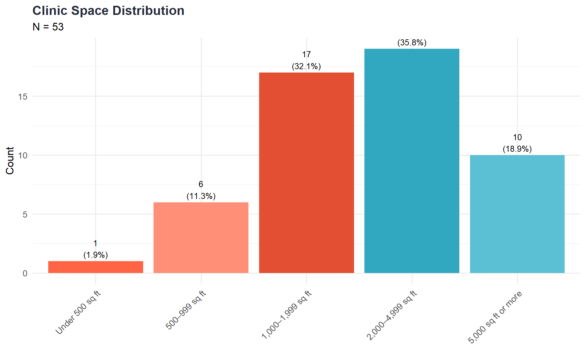
room_stats <- dat %>%
filter(!is.na(NumRooms), NumRooms > 0) %>%
summarise(N = n(), Mean = mean(NumRooms), SD = sd(NumRooms), Median = median(NumRooms),
Min = min(NumRooms), Max = max(NumRooms))
dat %>%
filter(!is.na(NumRooms), NumRooms > 0) %>%
ggplot(aes(x = NumRooms)) +
geom_histogram(binwidth = 2, fill = aptc_teal, color = "white", alpha = 0.9) +
geom_vline(aes(xintercept = median(NumRooms)), color = aptc_coral, linetype = "dashed", linewidth = 1) +
labs(title = "Number of Clinic Rooms",
subtitle = paste0("Mean = ", round(room_stats$Mean, 1), " | Median = ", room_stats$Median),
x = "Number of Rooms", y = "Count") +
theme_minimal(base_size = 13) +
theme(plot.title = element_text(face = "bold", color = aptc_navy))
max_trainee_summary <- dat %>%
filter(!is.na(MaxTraineeCount), MaxTraineeCount > 0) %>%
summarise(N = n(), Mean = mean(MaxTraineeCount), SD = sd(MaxTraineeCount), Median = median(MaxTraineeCount),
Min = min(MaxTraineeCount), Max = max(MaxTraineeCount))
dat %>%
filter(!is.na(MaxTraineeCount), MaxTraineeCount > 0) %>%
ggplot(aes(x = MaxTraineeCount)) +
geom_histogram(binwidth = 2, fill = aptc_coral, color = "white", alpha = 0.9) +
geom_vline(aes(xintercept = median(MaxTraineeCount)), color = aptc_navy, linetype = "dashed", linewidth = 1) +
labs(title = "Maximum Trainees per Supervisor",
subtitle = paste0("Mean = ", round(max_trainee_summary$Mean, 1), " | Median = ", max_trainee_summary$Median),
x = "Max Trainees", y = "Count") +
theme_minimal(base_size = 13) +
theme(plot.title = element_text(face = "bold", color = aptc_navy))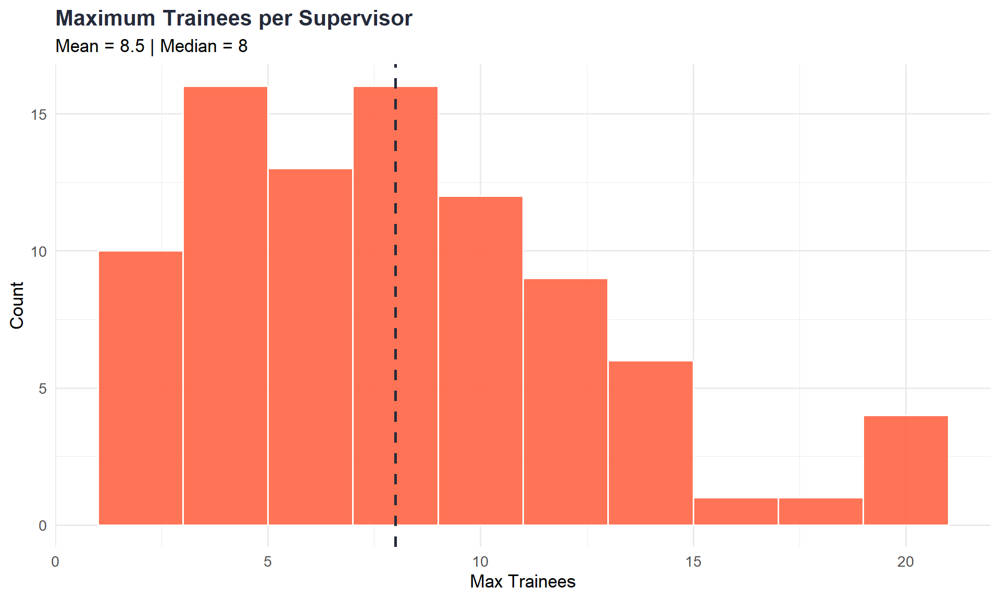
caseload_vars <- tibble(Variable = c("MaxTraineesTherapy", "MaxTraineesAssmnt", "MaxTxCasesAllow", "MaxAxCasesAllow"),
Metric = c("Max Therapy Trainees", "Max Assessment Trainees",
"Max Therapy Cases Allowed", "Max Assessment Cases Allowed"))
caseload_summary <- dat %>%
select(all_of(caseload_vars$Variable)) %>%
pivot_longer(everything(), names_to = "Variable", values_to = "Value") %>%
filter(!is.na(Value), Value > 0) %>%
left_join(caseload_vars, by = "Variable") %>%
group_by(Metric) %>%
summarise(N = n(), Mean = mean(Value), SD = sd(Value), Median = median(Value),
Min = min(Value), Max = max(Value), .groups = "drop")
caseload_summary %>%
mutate(across(where(is.numeric) & !matches("^N$"), ~round(., 1))) %>%
kable(caption = "Student Caseload & Supervisor Team Size") %>%
kable_styling(bootstrap_options = c("striped", "hover"))| Metric | N | Mean | SD | Median | Min | Max |
|---|---|---|---|---|---|---|
| Max Assessment Cases Allowed | 79 | 2.4 | 1.2 | 2 | 1 | 8 |
| Max Assessment Trainees | 77 | 6.3 | 3.9 | 5 | 1 | 25 |
| Max Therapy Cases Allowed | 77 | 5.6 | 2.1 | 5 | 2 | 10 |
| Max Therapy Trainees | 83 | 7.4 | 4.0 | 6 | 1 | 30 |
staff_vars <- tibble(Variable = c("FTESupportStaff", "ClinicSupportStaff", "FTEGradStaff", "GradStaff", "UgradStaff", "PostdocCount"),
Staff_Type = c("Support Staff (FTE)", "Support Staff (Count)", "Graduate Staff (FTE)",
"Graduate Staff (Count)", "Undergraduate Staff", "Postdocs"))
staff_summary <- dat %>%
select(any_of(staff_vars$Variable)) %>%
mutate(across(everything(), as.numeric)) %>%
pivot_longer(everything(), names_to = "Variable", values_to = "Value") %>%
filter(!is.na(Value), Value >= 0) %>%
left_join(staff_vars, by = "Variable") %>%
group_by(Staff_Type) %>%
summarise(N = n(), Mean = mean(Value), SD = sd(Value), Median = median(Value),
Min = min(Value), Max = max(Value), .groups = "drop") %>%
filter(!is.na(Staff_Type))
staff_summary %>%
mutate(across(where(is.numeric) & !matches("^N$"), ~round(., 1))) %>%
kable(caption = "Clinic Staff Summary") %>%
kable_styling(bootstrap_options = c("striped", "hover"))| Staff_Type | N | Mean | SD | Median | Min | Max |
|---|---|---|---|---|---|---|
| Graduate Staff (FTE) | 61 | 1.0 | 1.0 | 0.8 | 0 | 7 |
| Postdocs | 8 | 2.5 | 1.4 | 2.5 | 1 | 4 |
| Support Staff (FTE) | 68 | 1.6 | 2.6 | 1.0 | 0 | 20 |
staff_presence <- dat %>%
summarise(
`Has Support Staff` = mean(ClinicSupportStaff == "Yes", na.rm = TRUE) * 100,
`Has Grad Staff` = mean(GradStaff == "Yes", na.rm = TRUE) * 100,
`Has Undergrad Staff` = mean(UgradStaff == "Yes", na.rm = TRUE) * 100,
`Has Postdocs` = mean(PostDocsBinary == "Yes", na.rm = TRUE) * 100
) %>%
pivot_longer(everything(), names_to = "Staff Type", values_to = "Percentage")
ggplot(staff_presence, aes(x = reorder(`Staff Type`, Percentage), y = Percentage, fill = `Staff Type`)) +
geom_col(show.legend = FALSE) +
geom_text(aes(label = paste0(round(Percentage, 0), "%")), hjust = -0.1, size = 4) +
coord_flip() + scale_y_continuous(limits = c(0, 100)) + scale_fill_manual(values = aptc_palette) +
labs(title = "Percentage of Clinics with Various Staff Types", x = NULL, y = "Percentage (%)") +
theme_minimal(base_size = 13) +
theme(plot.title = element_text(face = "bold", color = aptc_navy))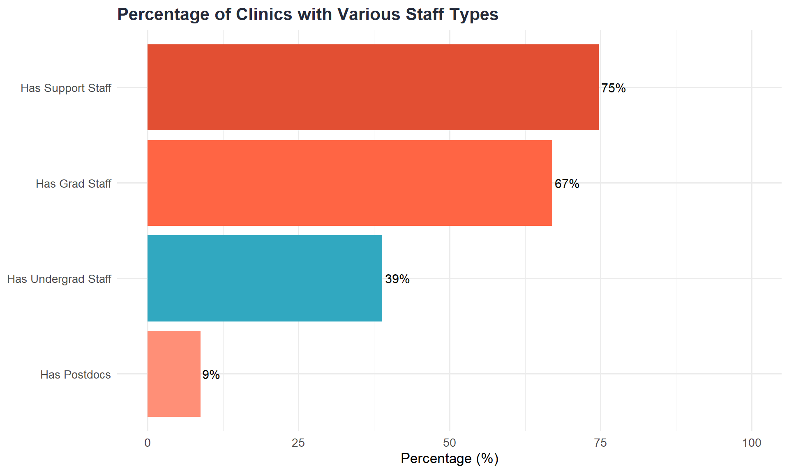
clinic_hours_stats <- dat %>%
mutate(ClinicHours = as.numeric(ClinicHours)) %>%
filter(!is.na(ClinicHours), ClinicHours > 0) %>%
summarise(N = n(), Mean = mean(ClinicHours), SD = sd(ClinicHours), Median = median(ClinicHours),
Min = min(ClinicHours), Max = max(ClinicHours))
clinic_hours_stats %>%
mutate(across(where(is.numeric) & !matches("^N$"), ~round(., 1))) %>%
kable(caption = "Clinic Operating Hours per Week") %>%
kable_styling(bootstrap_options = c("striped", "hover"))| N | Mean | SD | Median | Min | Max |
|---|---|---|---|---|---|
| 87 | 43 | 11.9 | 42 | 12 | 70 |
dat %>%
mutate(ClinicHours = as.numeric(ClinicHours)) %>%
filter(!is.na(ClinicHours), ClinicHours > 0) %>%
ggplot(aes(x = ClinicHours)) +
geom_histogram(binwidth = 5, fill = aptc_teal, color = "white", alpha = 0.9) +
geom_vline(aes(xintercept = median(ClinicHours)), color = aptc_coral, linetype = "dashed", linewidth = 1) +
labs(title = "Clinic Operating Hours per Week",
subtitle = paste0("Median = ", clinic_hours_stats$Median, " hours | Mean = ", round(clinic_hours_stats$Mean, 1), " hours"),
x = "Hours per Week", y = "Count") +
theme_minimal(base_size = 13) +
theme(plot.title = element_text(face = "bold", color = aptc_navy))
emr_summary <- dat %>% count(EMRbinary) %>% mutate(Percentage = round(100 * n / sum(n), 1))
ggplot(emr_summary, aes(x = EMRbinary, y = Percentage, fill = EMRbinary)) +
geom_col(show.legend = FALSE) +
geom_text(aes(label = paste0(n, " (", Percentage, "%)")), vjust = -0.5, size = 5) +
scale_y_continuous(limits = c(0, 100), breaks = seq(0, 100, 20)) +
scale_fill_manual(values = c("Yes" = aptc_teal, "No" = aptc_coral)) +
labs(title = "Electronic Medical Record (EMR) Usage", x = "Uses EMR?", y = "Percentage (%)") +
theme_minimal(base_size = 13) +
theme(plot.title = element_text(face = "bold", color = aptc_navy))
telehealth_summary <- dat %>% count(Telehealth) %>% mutate(Percentage = round(100 * n / sum(n), 1))
ggplot(telehealth_summary, aes(x = Telehealth, y = Percentage, fill = Telehealth)) +
geom_col(show.legend = FALSE) +
geom_text(aes(label = paste0(n, " (", Percentage, "%)")), vjust = -0.5, size = 5) +
scale_y_continuous(limits = c(0, 100), breaks = seq(0, 100, 20)) +
scale_fill_manual(values = aptc_palette) +
labs(title = "Telehealth Service Provision", x = "Offers Telehealth?", y = "Percentage (%)") +
theme_minimal(base_size = 13) +
theme(plot.title = element_text(face = "bold", color = aptc_navy))
telehealth_usage <- dat %>%
select(PercTxTelehealth_1, PercAxTelehealth_1, PercClinSupTele_1) %>%
mutate(across(everything(), as.numeric)) %>%
pivot_longer(everything(), names_to = "Variable", values_to = "Percent_InPerson") %>%
filter(!is.na(Percent_InPerson)) %>%
mutate(Service = case_when(Variable == "PercTxTelehealth_1" ~ "Therapy",
Variable == "PercAxTelehealth_1" ~ "Assessment",
Variable == "PercClinSupTele_1" ~ "Supervision"),
Percent_Telehealth = 100 - Percent_InPerson) %>%
group_by(Service) %>%
summarise(N = n(), Mean_InPerson = mean(Percent_InPerson), Mean_Telehealth = mean(Percent_Telehealth),
Median_InPerson = median(Percent_InPerson), Median_Telehealth = median(Percent_Telehealth), .groups = "drop")
telehealth_usage %>%
mutate(across(where(is.numeric) & !matches("^N$"), ~round(., 1))) %>%
kable(caption = "Telehealth vs In-Person Service Delivery (%)") %>%
kable_styling(bootstrap_options = c("striped", "hover"))| Service | N | Mean_InPerson | Mean_Telehealth | Median_InPerson | Median_Telehealth |
|---|---|---|---|---|---|
| Assessment | 83 | 91.8 | 8.2 | 99 | 1 |
| Supervision | 91 | 78.4 | 21.6 | 90 | 10 |
| Therapy | 84 | 75.4 | 24.6 | 80 | 20 |
telehealth_plot_data <- telehealth_usage %>%
select(Service, Mean_InPerson, Mean_Telehealth) %>%
pivot_longer(cols = c(Mean_InPerson, Mean_Telehealth), names_to = "Modality", values_to = "Percentage") %>%
mutate(Modality = ifelse(Modality == "Mean_InPerson", "In-Person", "Telehealth"))
ggplot(telehealth_plot_data, aes(x = Service, y = Percentage, fill = Modality)) +
geom_col(position = "dodge", alpha = 0.9) +
geom_text(aes(label = paste0(round(Percentage), "%")), position = position_dodge(width = 0.9), vjust = -0.5, size = 3.5) +
scale_fill_manual(values = c("In-Person" = aptc_teal, "Telehealth" = aptc_coral)) +
scale_y_continuous(limits = c(0, 100)) +
labs(title = "Service Delivery by Modality", subtitle = "Mean percentage of services delivered in-person vs telehealth",
x = NULL, y = "Percentage (%)", fill = "Modality") +
theme_minimal(base_size = 13) +
theme(plot.title = element_text(face = "bold", color = aptc_navy), legend.position = "top")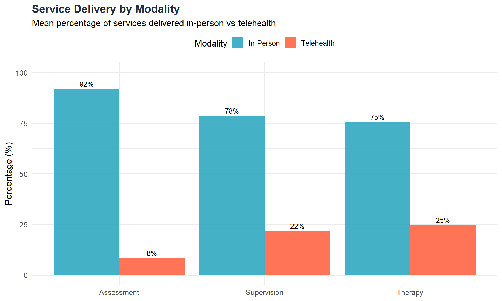
ai_clindir <- dat %>% count(AIUseClinDir) %>% mutate(Percentage = round(100 * n / sum(n), 1))
ai_students <- dat %>% count(AIUseStudentsAllowed) %>% mutate(Percentage = round(100 * n / sum(n), 1))
p1 <- ggplot(ai_clindir, aes(x = AIUseClinDir, y = Percentage, fill = AIUseClinDir)) +
geom_col(show.legend = FALSE) +
geom_text(aes(label = paste0(Percentage, "%")), vjust = -0.5, size = 4) +
scale_y_continuous(limits = c(0, 100)) + scale_fill_manual(values = aptc_palette) +
labs(title = "AI Use by Clinic Directors", x = NULL, y = "Percentage (%)") +
theme_minimal(base_size = 11) + theme(plot.title = element_text(face = "bold", color = aptc_navy))
p2 <- ggplot(ai_students, aes(x = AIUseStudentsAllowed, y = Percentage, fill = AIUseStudentsAllowed)) +
geom_col(show.legend = FALSE) +
geom_text(aes(label = paste0(Percentage, "%")), vjust = -0.5, size = 4) +
scale_y_continuous(limits = c(0, 100)) + scale_fill_manual(values = aptc_palette) +
labs(title = "AI Use Allowed for Students", x = NULL, y = "Percentage (%)") +
theme_minimal(base_size = 11) +
theme(plot.title = element_text(face = "bold", color = aptc_navy), axis.text.x = element_text(angle = 20, hjust = 1))
p1 + p2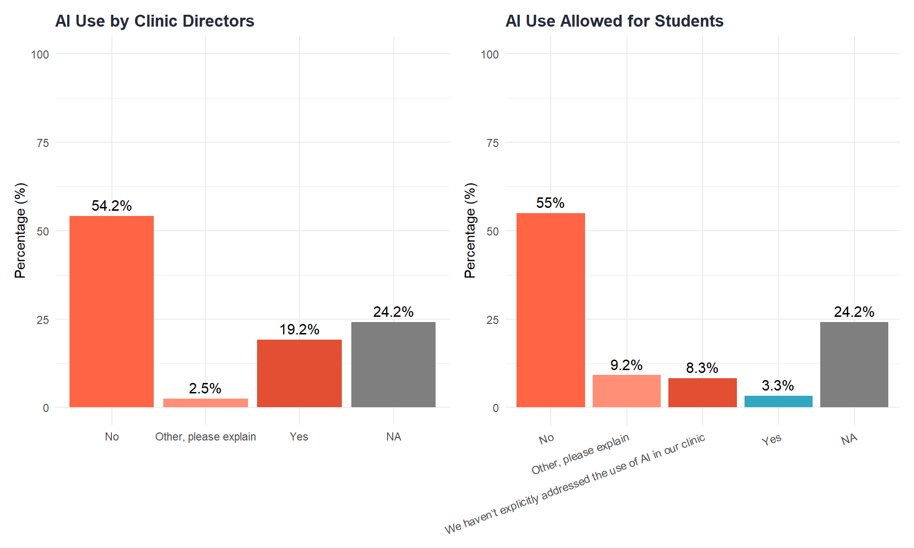
ai_policy <- dat %>% count(AIPolicy) %>% mutate(Percentage = round(100 * n / sum(n), 1))
ai_policy %>%
kable(caption = "Does Your Clinic Have an AI Policy?") %>%
kable_styling(bootstrap_options = c("striped", "hover"))| AIPolicy | n | Percentage |
|---|---|---|
| No | 17 | 14.2 |
| Other, please explain | 4 | 3.3 |
| Yes | 70 | 58.3 |
| NA | 29 | 24.2 |
rom_vars <- c("ROMsystem_1" = "OQ-45", "ROMsystem_2" = "PHQ-9/GAD-7", "ROMsystem_3" = "PCOMS/ORS",
"ROMsystem_4" = "Standardized Assessment Battery", "ROMsystem_5" = "Custom/Clinic-developed",
"ROMsystem_6" = "Other")
rom_summary <- dat %>%
select(starts_with("ROMsystem_")) %>% select(-contains("TEXT")) %>%
summarise(across(everything(), ~sum(!is.na(.) & . != "0" & . != "", na.rm = TRUE))) %>%
pivot_longer(everything(), names_to = "Variable", values_to = "Count") %>%
mutate(System = rom_vars[Variable], Percentage = round(100 * Count / nrow(dat), 1)) %>%
filter(!is.na(System), Count > 0) %>% arrange(desc(Count))
if(nrow(rom_summary) > 0) {
ggplot(rom_summary, aes(x = reorder(System, Count), y = Percentage, fill = System)) +
geom_col(show.legend = FALSE) +
geom_text(aes(label = paste0(Count, " (", Percentage, "%)")), hjust = -0.1, size = 3.5) +
coord_flip() + scale_y_continuous(limits = c(0, max(rom_summary$Percentage) + 15)) +
scale_fill_manual(values = aptc_palette) +
labs(title = "Routine Outcome Monitoring Systems Used", subtitle = "Respondents could select multiple systems",
x = NULL, y = "Percentage (%)") +
theme_minimal(base_size = 13) +
theme(plot.title = element_text(face = "bold", color = aptc_navy), panel.grid.minor = element_blank())
rom_summary %>%
select(System, Count, Percentage) %>%
kable(caption = "ROM Systems Used (Select All That Apply)") %>%
kable_styling(bootstrap_options = c("striped", "hover"))
}| System | Count | Percentage |
|---|---|---|
| Custom/Clinic-developed | 25 | 20.8 |
| Standardized Assessment Battery | 23 | 19.2 |
| PHQ-9/GAD-7 | 11 | 9.2 |
| Other | 11 | 9.2 |
| OQ-45 | 7 | 5.8 |
| PCOMS/ORS | 6 | 5.0 |
research_summary <- dat %>% count(ResearchActive) %>% mutate(Percentage = round(100 * n / sum(n), 1))
ggplot(research_summary, aes(x = ResearchActive, y = Percentage, fill = ResearchActive)) +
geom_col(show.legend = FALSE) +
geom_text(aes(label = paste0(n, " (", Percentage, "%)")), vjust = -0.5, size = 4) +
scale_y_continuous(limits = c(0, 100), breaks = seq(0, 100, 20)) +
scale_fill_manual(values = aptc_palette) +
labs(title = "Research Activity in Training Clinics", x = "Research Status", y = "Percentage (%)") +
theme_minimal(base_size = 13) +
theme(plot.title = element_text(face = "bold", color = aptc_navy), axis.text.x = element_text(angle = 15, hjust = 1))
burnout_stats <- dat %>%
filter(!is.na(Burnout_1)) %>%
summarise(N = n(), Mean = mean(Burnout_1), SD = sd(Burnout_1), Median = median(Burnout_1),
Min = min(Burnout_1), Max = max(Burnout_1))
dat %>%
filter(!is.na(Burnout_1)) %>%
ggplot(aes(x = Burnout_1)) +
geom_histogram(binwidth = 1, fill = aptc_coral, color = "white", alpha = 0.9) +
geom_vline(aes(xintercept = mean(Burnout_1)), color = aptc_navy, linetype = "dashed", linewidth = 1) +
scale_x_continuous(breaks = 0:6) +
labs(title = "Burnout Levels Among Clinic Directors",
subtitle = paste0("Mean = ", round(burnout_stats$Mean, 2), " (SD = ", round(burnout_stats$SD, 2), ") | Range: 0-6"),
x = "Burnout Score (0 = No burnout, 6 = Severe burnout)", y = "Count") +
theme_minimal(base_size = 13) +
theme(plot.title = element_text(face = "bold", color = aptc_navy))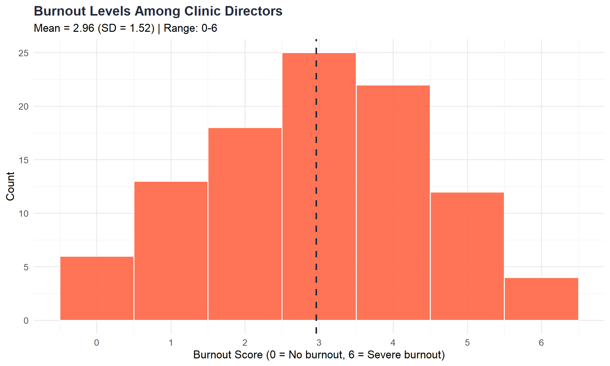
The CBI assesses multiple dimensions of work-related burnout. Items are rated on a scale where higher scores indicate greater burnout.
cbi_vars <- tibble(Variable = c("Burnout_1", "Burnout_2", "Burnout_3", "Burnout_4", "Burnout_5"),
Item = c("How often do you feel tired?", "How often are you physically exhausted?",
"Do you feel burned out because of your work?",
"Do you feel worn out at the end of the working day?",
"Do you find it hard to work with clients?"))
cbi_summary <- dat %>%
select(all_of(cbi_vars$Variable)) %>%
pivot_longer(everything(), names_to = "Variable", values_to = "Score") %>%
filter(!is.na(Score)) %>%
left_join(cbi_vars, by = "Variable") %>%
group_by(Item) %>%
summarise(N = n(), Mean = mean(Score), SD = sd(Score), Median = median(Score), .groups = "drop") %>%
arrange(desc(Mean))
cbi_summary %>%
mutate(across(where(is.numeric) & !matches("^N$"), ~round(., 2))) %>%
kable(caption = "Copenhagen Burnout Inventory (CBI) Item Summary") %>%
kable_styling(bootstrap_options = c("striped", "hover"))| Item | N | Mean | SD | Median |
|---|---|---|---|---|
| How often do you feel tired? | 100 | 2.96 | 1.52 | 3 |
| How often are you physically exhausted? | 100 | 2.65 | 1.59 | 3 |
| Do you feel worn out at the end of the working day? | 100 | 2.27 | 1.57 | 2 |
| Do you feel burned out because of your work? | 100 | 1.94 | 1.58 | 2 |
| Do you find it hard to work with clients? | 100 | 1.40 | 1.46 | 1 |
dat <- dat %>%
rowwise() %>%
mutate(Burnout_Composite = mean(c(Burnout_1, Burnout_2, Burnout_3, Burnout_4, Burnout_5), na.rm = TRUE)) %>%
ungroup()
burnout_composite_stats <- dat %>%
filter(!is.na(Burnout_Composite)) %>%
summarise(N = n(), Mean = mean(Burnout_Composite), SD = sd(Burnout_Composite),
Median = median(Burnout_Composite), Min = min(Burnout_Composite), Max = max(Burnout_Composite))
dat %>%
filter(!is.na(Burnout_Composite)) %>%
ggplot(aes(x = Burnout_Composite)) +
geom_histogram(binwidth = 0.5, fill = aptc_coral, color = "white", alpha = 0.9) +
geom_vline(aes(xintercept = mean(Burnout_Composite)), color = aptc_navy, linetype = "dashed", linewidth = 1) +
scale_x_continuous(breaks = 0:6) +
labs(title = "CBI Composite Burnout Score Distribution",
subtitle = paste0("Mean = ", round(burnout_composite_stats$Mean, 2), " (SD = ", round(burnout_composite_stats$SD, 2), ")"),
x = "Composite Burnout Score (0-6)", y = "Count") +
theme_minimal(base_size = 13) +
theme(plot.title = element_text(face = "bold", color = aptc_navy))
cbi_plot_data <- dat %>%
select(all_of(cbi_vars$Variable)) %>%
pivot_longer(everything(), names_to = "Variable", values_to = "Score") %>%
filter(!is.na(Score)) %>%
left_join(cbi_vars, by = "Variable") %>%
mutate(Item = str_wrap(Item, width = 30))
ggplot(cbi_plot_data, aes(x = reorder(Item, Score, FUN = mean), y = Score, fill = Item)) +
geom_boxplot(alpha = 0.8, show.legend = FALSE) +
coord_flip() + scale_fill_manual(values = aptc_palette) +
labs(title = "Burnout by CBI Item", subtitle = "Higher scores indicate greater burnout (0-6 scale)",
x = NULL, y = "Burnout Score") +
theme_minimal(base_size = 12) +
theme(plot.title = element_text(face = "bold", color = aptc_navy))
burnout_by_tt <- dat %>%
filter(!is.na(Burnout_Composite), !is.na(PositionType)) %>%
mutate(TenureStatus = case_when(is_tt(PositionType) ~ "TT/Tenured",
is_ntt(PositionType) ~ "Non-Tenure-Track",
TRUE ~ "Other")) %>%
group_by(TenureStatus) %>%
summarise(N = n(), Mean = mean(Burnout_Composite), SD = sd(Burnout_Composite),
Median = median(Burnout_Composite), .groups = "drop")
burnout_by_tt %>%
mutate(across(where(is.numeric) & !matches("^N$"), ~round(., 2))) %>%
kable(caption = "Composite Burnout by Tenure Track Status") %>%
kable_styling(bootstrap_options = c("striped", "hover"))| TenureStatus | N | Mean | SD | Median |
|---|---|---|---|---|
| Non-Tenure-Track | 73 | 2.21 | 1.26 | 2.0 |
| Other | 17 | 2.49 | 1.35 | 2.6 |
| TT/Tenured | 10 | 2.08 | 1.07 | 1.8 |
burnout_by_rank <- dat_simple %>%
filter(!is.na(Burnout_1), !is.na(RankGrp)) %>%
group_by(RankGrp) %>%
summarise(N = n(), Mean = mean(Burnout_1, na.rm = TRUE), SD = sd(Burnout_1, na.rm = TRUE), .groups = "drop") %>%
filter(N >= 3)
if(nrow(burnout_by_rank) > 0) {
ggplot(burnout_by_rank, aes(x = reorder(RankGrp, Mean), y = Mean, fill = RankGrp)) +
geom_col(show.legend = FALSE) +
geom_errorbar(aes(ymin = pmax(0, Mean - SD), ymax = Mean + SD), width = 0.2, color = aptc_navy) +
geom_text(aes(label = paste0("n=", N)), vjust = -0.5, size = 3) +
coord_flip() + scale_fill_manual(values = aptc_palette) +
labs(title = "Burnout by Academic Rank", subtitle = "Error bars = ±1 SD", x = NULL, y = "Mean Burnout Score (0-6)") +
theme_minimal(base_size = 13) +
theme(plot.title = element_text(face = "bold", color = aptc_navy))
}
sessionInfo()R version 4.5.1 (2025-06-13 ucrt)
Platform: x86_64-w64-mingw32/x64
Running under: Windows 11 x64 (build 26200)
Matrix products: default
LAPACK version 3.12.1
locale:
[1] LC_COLLATE=English_United States.utf8
[2] LC_CTYPE=English_United States.utf8
[3] LC_MONETARY=English_United States.utf8
[4] LC_NUMERIC=C
[5] LC_TIME=English_United States.utf8
time zone: America/Chicago
tzcode source: internal
attached base packages:
[1] stats graphics grDevices utils datasets methods base
other attached packages:
[1] viridis_0.6.5 viridisLite_0.4.2 patchwork_1.3.2 kableExtra_1.4.0
[5] knitr_1.51 gt_1.3.0 scales_1.4.0 skimr_2.2.1
[9] freqtables_0.1.1 lubridate_1.9.4 forcats_1.0.0 stringr_1.5.1
[13] dplyr_1.1.4 purrr_1.1.0 readr_2.1.5 tidyr_1.3.2
[17] tibble_3.3.0 ggplot2_4.0.1 tidyverse_2.0.0 readxl_1.4.5
loaded via a namespace (and not attached):
[1] gtable_0.3.6 xfun_0.52 htmlwidgets_1.6.4 lattice_0.22-7
[5] tzdb_0.5.0 vctrs_0.7.1 tools_4.5.1 generics_0.1.4
[9] pkgconfig_2.0.3 Matrix_1.7-3 RColorBrewer_1.1-3 S7_0.2.0
[13] lifecycle_1.0.4 compiler_4.5.1 farver_2.1.2 textshaping_1.0.1
[17] repr_1.1.7 litedown_0.7 htmltools_0.5.8.1 sass_0.4.10
[21] yaml_2.3.10 pillar_1.11.0 nlme_3.1-168 commonmark_2.0.0
[25] tidyselect_1.2.1 digest_0.6.37 stringi_1.8.7 labeling_0.4.3
[29] splines_4.5.1 fastmap_1.2.0 grid_4.5.1 cli_3.6.5
[33] magrittr_2.0.3 base64enc_0.1-3 utf8_1.2.6 withr_3.0.2
[37] timechange_0.3.0 rmarkdown_2.29 gridExtra_2.3 cellranger_1.1.0
[41] hms_1.1.3 evaluate_1.0.4 markdown_2.0 mgcv_1.9-3
[45] rlang_1.1.7 glue_1.8.0 xml2_1.3.8 svglite_2.2.1
[49] rstudioapi_0.17.1 jsonlite_2.0.0 R6_2.6.1 systemfonts_1.3.1
[53] fs_1.6.6
10 Social Justice & DEI Efforts
Code
Code